본 절차서의 목적은 지역 지반운동 결정을 위한 공간 지반정보 기반 지반분류(부지분류)를 위한 데이터 처리 관련 이론적 배경과 실무적 이용방법을 설명하기 위함이다. 기초 자료로 지반조사 자료, 지표특성 자료가 필요하며, 처리 도구로는 데이터베이스 처리 소프트웨어, 지구통계 소프트웨어, GIS 소프트웨어가 부수적으로 이용될 수 있다.
(2) 절차서 배경
지반 분류에 관한 실증 사례로는 국내의 경우 「KDS 17 10 00 내진설계 일반(국토교통부, 2024)」 및 「KDS 41 17 00 건축물 내진설계기준(국토교통부, 2022)」에서 제시된 지반 분류 기법이, 국외에서는 미국의 국립지진재해경감 프로그램(National Earthquake Hazards Reduction Program; NEHRP)의 「Recommended Seismic Provisions for New Buildings and Other Structures (2020)」에서 제시한 분류 기법이 대표적으로 제시된다. 이 방법은 공통적으로 지반 응답 특성 중 전단파속도를 바탕으로 부지 특성을 분류하는데, 차이가 있다면 미국은 30m 심도까지의 평균 전단파속도를, 국내는 기반암 심도와 토층 평균 전단파속도를 이용한다는 점이다. 이처럼, 특정 부지의 기하학적 조건과 지반의 동적 물성에 관한 특성은 지진재해 지역의 구역화와 밀접하게 관계된 매개변수로서 면밀히 조사될 필요가 있다.
지반 정보는 지표 및 지표하의 구조 및 특성을 기록한 데이터로 시추조사에 의해 수집된다. 국내 지반 정보는 대표적으로 국토교통부 국토지반정보포털(https://www.geoinfo.or.kr/)을 통해 수집 및 관리되고 있으며 시추 위치와 주상도를 통해 특정 부지에 관한 지반 정보를 입체적으로 제공하고 있다. 그 밖에도 지방정부 및 유관기관(한국지질자원연구원, 한국도로공사 등)에서는 독립적인 조사활동을 통해 지반 정보를 수집하고 있으나 조사 항목이나 형태가 일관되지 않아 광역적인 지반 분류에 활용함에 있어 한계가 있다. 이러한 관점에서 한국지질자원연구원은 지진증폭특성의 정량화와 지진재해 구역화 기술로부터 기초 지반조사 DB를 구축하고, 이를 바탕으로하는 지반분류 절차를 기술고자 한다.
주의 사항
본 절차서는 한국지질자원연구원이 보유한 지진지반재해 평가를 위한 지반분류지도 기술을 기반으로 구성되었으며, 원천기술은 한국지질자원연구원 연구진이 보유하고 있다.
본 절차서는 국내 동남권 지역의 자료를 이용하여 개발된 기술이므로 타지역의 다른 자료를 이용할 경우에 개발 기술의 적합한 결과 도출이 어려울 수 있다.
본 절차서는 일부 지반공학, 지반지진공학, 지구통계학 등의 전문적 배경지식이 필요할 수 있으며, 이는 관련 참고문헌(논문 및 보고서)를 참조하도록 한다.
본 절차서는 데이터 처리를 위한 핵심 알고리즘의 설명에 집중되어 있다.
본 절차서는 국립재난안전연구원의 연구지원을 받아 달성된 고유 연구성과물이이므로 이에 대한 활용은 국립재난안전연구원에 귀속된다.
본 절차서는 관련 연구사업의 모든 연구내용을 포함하지 않으며, 알고리즘 설명을 위한 관심영역 적용 예제가 기술되어 있다.
용어 정의
[표 1-1] 지반분류 데이터 처리 관련 주요 용어
용어명
설명
디지타이징 (Digitization)
지반 및 부지 관련 문서자료의 수치, 형상의 디지털 정보화를 위한 자료의 입력, 표출을 의미함
지반정보 DB
특정 영역의 지표특성(지형, 지질, 지물 등 피복특성)과 지반특성(지반조사 기반의 지층 층상, 강성/강도 측정/탐사 결과) 및 지반응력/변위 해석결과, 지반특성값 및 설계정수 등을 체계적으로 입력/관리/표출/연동해석할 수 있도록 구성된 관계형 데이터베이스와 하위 정보 목록(테이블)
이상치(Outlier)
통계적으로 보통 관측된 데이터의 범위에서 많이 벗어난 아주 작은 값이나 큰 값을 의미함
크리깅(Kriging)
수학적 방법과 통계학적 방법이 결합된 형태이며, 기지 자료간의 상관관계, 기지 자료와 예측될 지점 값의 상관관계, 기지 자료의 경향성 등을 반영할 수 있어서 넓은 영역의 공간적 보간에 매우 효과적임
순차 시뮬레이션(Sequential Simulation)
주어진 n개 자료와 공분산을 만족하면서 N개 자료를 순차적으로 생성하는 기법으로 매단계에서 생성된 자료값을 다음 계산단계에서는 알려진 자료로 가정함
순차 가우스 시뮬레이션(Sequential Gauss Simulation, SGS)
순차 시뮬레이션 기법 중 가장 일반적인 방법 중 하나가 순차 가우스 시뮬레이션이며, 주어진 n개 자료와 공분산을 보존하면서 N개 자료를 생성하는 기법임
교차검증
n개의 데이터에서 1개를 Test Set으로 정하고 나머지 n-1개의 데이터로 모델링을 하는 방법을 의미함
공간 지반정보
지반정보 DB 표준안을 통해 입력된 지표 및 지반특성 정보의 공간상 2차원/2.5차원/3차원, 더 나아가 시간영역 결과(4차원)를 포함하여 지반공간정보 생성(mesh/grid generation)을 위한 지반정보 전처리, 신뢰성 해석, 공간보간, 경험적(추계적) 또는 AI기반 비선형 지반모델 생성의 절차를 포함한 표준모델로 정의됨.
필요 데이터
[표 1-2] 지반분류 데이터 처리 관련 주요 필요 데이터
입력값
형식
단위
자료출처
Ref.
지반정보ID
문자
-
국토지반정보 통합 DB센터 및 유관기관
https://www.geoinfo.or.kr/
지반조사 사업명
문자
-
시추공명
문자
-
조사일
날자
-
X 좌표
실수
m
Y 좌표
실수
m
지표고
실수
m
국토정보플랫폼
http://map.ngⅡ.go.kr/mn/mainPage.do
경사도
실수
%
지질분류
문자
-
지오빅데이터 오픈플랫폼(한국지질자원연구원)
https://data.kigam.re.kr/
지하수위
실수
m
국토지반정보 통합 DB센터 및 유관기관
https://www.geoinfo.or.kr/
조사심도
실수
m
지층두께
실수
m
지층명(공학적)
문자
-
지층명(통일분류법)
문자
-
표준관입시험 N값
정수
-
표준관입시험 관입심도
실수
㎝
지역 지반운동 결정을 위한 공간 지반정보 기반 지반분류
개요
(1) 공간 지반정보 기반 지반분류 개념
지역 지반운동 결정을 위한 공간 지반정보 기반 지반분류 절차는 크게 지역 지반조사 결과의 입력 자료화, 지역 공간 대상 지반정보 구현, 지진부지응답 매개변수 도출, 내진설계 지반분류 공간정보 구현 및 지반운동 결정의 단계로 구성된다. 부지분류(지반분류)를 통한 성과물은 지도 형태이므로 자료의 획득, 데이터화, 전처리, 변환, 가공, 가시화의 일반적인 지도화 절차에 따른다. 지반분류지도는 영역의 크기 및 획득 자료의 수량, 정밀도, 수준에 따라서 크게 3단계(Macro-zonation, Micro-zonation, Nano-zonation) 의 지도화 방법이 적용된다.
대상부지 영역 중 Micro-zonation의 정의를 포함하여 더 넓고, 표준모델 격자간격이 더 크고, 획득 가능한 지반정보의 종류가 지표주제도(지질도, 수치지형도 등)으로 국한된 경우로, 대체로 행정구역상 도 또는 국가단위의 연산을 위해서 적용된다. 이 경우 동일한 공간그리드(격자망)을 기준으로 지표주제도를 재분류, 군집화함으로써 단위 격자별로 지질 및 지형특성 정보를 부여할 수 있도록 표준모델을 설계한다.
Micro-zonation은 지반조사(주로 시추조사) 자료 수집, 오차검증, 그리고 적합한 지구통계학적 공간보간 기법(주로 Kriging)을 적용하는 일련의 과정으로 설계된다. 대상 지반물성/특성값은 대체로 광역부지 영역을 포괄하여 정의가능한 공학적 지층분류(매립토, 퇴적토, 풍화토, 풍화암, 연암 이하의 기반암)이며, 그 외 층별 대푯값(SPT-N값, VS 외 기본물성값 정보)이 이에 해당한다. 각 지층 또는 물성별로 표준모델이 적용되면, 2차원 형태의 공간그리드가 생성되며, 이를 적층(Over-layering)하는 방식으로 2.5차원의 공간그리드 생성이 가능하다.
Nano-zonation은 지반물성/특성값의 수평/수직성분의 공간상관성을 검토하고, 시추조사 외 공내 또는 지표 물리탐사 결과, CPT 등의 원위치 조사 결과를 포괄하여 3차원 공간그리드 생성이 가능한 모델로 상세 정의가 가능하다. 이 경우, 인접한 1D 지반주상도 상 공간좌표(X, Y좌표)와 심도별 물성값 간의 공간자기상관성을 고려하여 미조사 지점/심도별 물성값의 공간보간을 수행한다. Horizontal/depth variogram 모델링은 X-Y 평면상/심도방향으로 일정한 거리에 따른 물성값들의 상관관계를 평가하는데, 대체로 거리가 가까우면 물성값이 유사하므로 작게 평가, 멀수록 크게 평가하는 경향을 보인다. 앞서 Micro-zonation 방법과 유사하게 공간보간 기법은 크리깅 외 시뮬레이션 등의 고차원 지구통계학 기법을 적용한다든지, 다변량 물성값 간의 상관관계 도출을 위한 Direct sampling, 더 나아가 기계학습 기법을 적용하게 된다. Kriging(예: ordinary kriging) 기법 이용하면, 최선의 선형 불편 추정자 개념을 적용한 통계분석 방법의 적용이 가능하므로, 추정 값은 주변자료들의 선형조합에 따라 오차 분산이 최소화되고, 잔류오차가 0이 되는 추정자로 산정한다. Simulation(예: sequential simulation) 기법을 이용하면, 물성값들의 평균과 분산을 유지하면서 자료를 생성해 내는 기법, 주어진 자료의 공간적 상관관계가 반영되면서 자료 불균질성 모사할 수 있다. 그 외 기계학습(예: ANN, CNN, RNN, LSTM)을 이용한다면, 1D 지반주상도 정보로 신경망을 훈련시킨 회귀 학습모델을 이용하며, 일반적으로 다음과 같은 과정에 따라 학습모델을 설계할 수 있다.
[그림 2-1] 지반(지반)분류 개념도
대상영역에 따라 적합한 지반분류 지도화 방법 선정이 필요하며 1km*1km 영역에 대해서는 자료의 밀집도 또는 공간적 상관성에 관계없이 적합한 공간보간 기법을 선정하여 적용 가능하다. 그 이상의 영역이나, 광역(행정권역 구, 시, 도 이상) 부지에 대해서는 공간적 밀집도 또는 관심지역을 세분화하여 각 영역(지역)별로 공간보간하여 병합하는 방법을 추천한다.
지반정보 DB 전처리 및 유효(필수) 지반특성값의 입력 여부를 확인하기 위해 지층정보, SPT-N값 정보의 입력 여부를 확인하고 SPT-N값의 전단파속도 변환(Sun et al., 2013; Kim et al., 2020) 여부를 확인한다. 기반암 심도 정의(Cho et al., 2021; Sun and Kim, 2017)는 SPT-N값 기준 변환된 전단파속도 주상도를 기준으로 공학적 기반암(760m/s 이상)으로 정의하되, 1) SPT-N값이 없는 경우, 시추주상도 기반암(연암, 보통암, 경암 등)으로 정의, 2) SPT 주상도의 종단심도보다 깊은 심도의 시추주상도가 있는 경우, 종단심도 이하는 시추주상도로 대체한다. 계측 전단파속도 이용은 다운홀탐사, 굴절파탐사 결과는 동일한 조건(공간보간 가중치 부여하지 않음)으로 적용한다.
대상 자료의 공간적 상관성 또는 밀집성을 파악하기 위해서 베리오그램 모델링을 통해 기존 이론적 베리오그램 모델 중 회귀적 유사성을 갖는 모델을 찾고 상관거리, 너겟, 비등방성 등의 변수를 지구통계학적 전문가 관점에서 모사할 필요가 있다. 또는 공간 밀집성(예: 커널 밀도, 핫스팟)를 이용하여 공간 군집을 기준으로 블록크리깅이나 시뮬레이션(자료가 많다면)을 적용하는 것을 추천한다.
크리깅 기법의 선정은 시추공 일반적으로 Simple Kriging, Ordinary Kriging 중에서 대상 영역 내 대상 시추공에 대해서 교차검증을 기준으로 평균 오차 범위가 작은 Kriging 방법을 사용하는 것을 권고한다. 시뮬레이션 기법 적용의 경우에는 자료의 밀집도가 크지 않고, 베리오그램 모델링의 적합성 검증이 어렵거나, 또는 크리깅 기법과의 비교가 필요하다면 시뮬레이션 기법을 적용하는 것을 권고한다. 다만, 다수의 시뮬레이션은 지역균일화(Smoothing)의 부작용을 유발할 수 있으므로, 적합한 횟수의 시뮬레이션을 적용하는 것이 필요하다.
(2) 동남권 적용·검증 지역 평가예제
본 절차서에는 지역 지반운동 특성에 따른 공간 지반정보 분석과 지반분류 알고리즘에 설명과 함께 이에 관한 적용 예제를 동남권 적용 및 검증 지역(포항, 포항-경주, 포항-경주-울산, 포항-경주-울산-부산-창원 권영 등)을 대상으로 설명하였다. 평가예제는 자료의 현황, 입력 및 전처리, 공간정보화, 지반응답특성 해석에 관해서 각 알고리즘 설명 내용과 연결하여 절차서를 구성하였다.
역 지반조사 결과의 입력 자료화
(1) 지반정보 DB 표준안
시추조사 및 지반동적특성 자료의 현황파악 및 구조분석을 통해 자료를 체계화하고 이를 통해 데이터베이스(DB) 내 테이블 구조 및 테이블 간 연계성을 설정하여 데이터베이스 표준화 방법론에 따라 지반정보 DB 표준안이 설계된다(한국지질자원연구원, 2016). 지진공학적 지반정보는 크게 시추를 통해 획득한 시추조사 자료와 지반의 동적 특성을 파악하기 위해 수행된 지반 동적 특성 시험 자료로 구분된다(Kim and Chung, 2016). 기존 지반조사 표준화 모델을 토대로 시추조사 자료는 시추주상도 상의 시추 위치, 시추일 정보를 포함하는 시추일반 정보와 각 지층별 두께, 색, 강성 등의 특성정보를 기술한 층상정보로 구분된다. 또한 시추과정 상 표준관입시험(Standard Penetration Test; SPT)을 통해 확보한 N값 정보와 풍화대 또는 기반암의 풍화도를 파악하고자 RQD 정보를 입력할 수 있도록 구성된다. 또한 현장시험 또는 실내시험을 통해 확보된 지반동적특성 분석자료를 입력할 수 있도록 크게 심도별 탄성파 속도를 측정한 탄성파 시험 정보, 전단강도 및 감쇠비에 대한 공진주 시험 정보, 반복 응력에 대한 응력비를 산정한 반복삼축 시험 정보로 구분한다.
[그림 2-2] 지반지진공학적 지반정보 데이터베이스 구조
시추조사 자료는 광역영역의 합리적인 공간보간 기법 적용을 위해 지반정보의 조사, 입력 시에 발생할 수 있는 오류와 에러를 검토하여 GIS DB의 무결성 및 신뢰성을 개선한다. 수집된 시추조사 자료의 무결성 검토를 위해서는 대상 영역 외 분포하는 자료나 공간좌표가 오기입된 정보는 해당 필드를 우선적으로 수정 보완한다. 또한 시추조사 속성값 중 대표층(매립토, 퇴적토, 풍화토, 풍화암)의 두께 정보가 과도하게 입력된 경우(예: 퇴적토층 55m)는 공간분포상 인접한 자료의 속성값을 대체 입력하도록 한다. 전술된 시추조사 데이터베이스의 구조에 따라 입력과정에서 오기입되거나 필수 입력필드(좌표, 층상정보)가 누락된 자료를 수정 보완한다. 이와 같은 데이터베이스의 무결성을 검증하기 위해 지반공학 및 정보공학 전문가적 의사결정 과정이 필요하며, 이를 위해 데이터베이스 검증 항목을 제시하도록 한다. DEM 및 시추조사 자료 분포상 도심지 지역을 제외하고 산지 지역 및 일부 하안(또는 호안)에 자료의 밀도가 낮았다. 따라서 구축된 시추조사 자료 DB의 공간적 분포 특성 및 상관성을 종합적으로 고려하여 지구통계학적 공간분석을 수행한다.
(2) 지반정보 DB 테이블 구성
시추조사 자료는 별도의 표준화된 데이터베이스 설계안을 기반으로 입력된다. 설계된 데이터베이스의 각 테이블의 세부 구성을 상위 테이블부터 살펴보면, 프로젝트 정보를 저장하기 위한 T_Project와 시추 위치 등을 저장하는 T_Borehole가 있다. T_Project와 T_Borehole은 각 프로젝트의 고유 번호(project_id)로 연계되어 있다.
[표 2-1] [T_Project] 테이블 상세
입력 항목
데이터 형태
제약 조건
설명
site_id
정수
-
지역 코드
project_id
정수
중복 불가
프로젝트 코드
project_name
문자
-
프로젝트 명
project_file
문자
-
프로젝트 실험 파일 입력 유무
[표 2-2] [T_Borehole] 테이블 상세
입력 항목
데이터 형태
제약 조건
설명
site_id
정수
-
지역 코드
project_id
정수
-
프로젝트 코드
borehole_id
정수
중복불가
시추공 코드
borehole_name
문자
-
시추공 명
b_x
실수
-
X 좌표
b_y
실수
-
Y 좌표
b_z
실수
-
표고
b_gwl
실수
-
지하수위
b_date
날자
-
시추일
b_inspector
문자
-
검사자
b_driller
문자
-
시추자
b_machine
문자
-
시추기
b_location
문자
-
시추장소
b_method
문자
-
시추방법
시추 조사 자료 중 시추 지점의 층상 정보(T_Layer), 표준관입시험 정보(T_SPT), 실내외 시험 결과 요약 정보(T_Borehole_Sum)는 T_Borehole의 하위 테이블로 각 시추공(시추위치)의 고유 번호(borehole_id)로 연계되어 있다.
[표 2-3] [T_Layer] 테이블 상세
입력 항목
데이터 형태
제약 조건
설명
borehole_id
정수
-
시추공 코드
dep_from
실수
중복 불가
층의 시작 깊이
dep_to
실수
-
층의 끝 깊이
Eng_name
문자
-
공학적 층 구분
color
문자
-
색조
den_from
문자
-
밀도
den_to
문자
-
밀도
moist_from
문자
-
습윤도
moist_to
문자
-
습윤도
compo_main
문자
-
주 구성 물질
compo_sub
문자
-
부 구성 물질
fracture_from
문자
-
파쇄도
fracture_to
문자
-
파쇄도
weather_from
문자
-
풍화도
weather_to
문자
-
풍화도
str_from
문자
-
강도
str_to
문자
-
강도
comment
문자
-
비고
[표 2-4] [T_SPT] 테이블 상세
입력 항목
데이터 형태
제약 조건
설명
borehole_id
정수
-
시추공 코드
spt_depth
실수
중복 불가
시험 깊이
spt_N
정수
-
항타 회수
pet_depth
실수
-
항타 깊이
[표 2-5] [T_Borehole_Sum] 테이블 상세
입력 항목
데이터 형태
제약 조건
설명
borehole_id
정수
-
시추공 코드
dep_from
실수
중복 불가
시험 시작 깊이
dep_to
실수
-
시험 끝 깊이
m_date
날자
-
시험일자
wn
실수
-
시험 끝 깊이
Gs
실수
-
시험 끝 깊이
e0
실수
-
초기 간극비
rt
실수
-
전체 단위 중량
LL
실수
-
액성 한계
PI
실수
-
소성 지수
PL
실수
-
소성 한계
OMC
실수
-
최적 함수비
rdmax
실수
-
최대 상대밀도
rdmin
실수
-
최소 상대밀도
CBR
실수
-
CBR
qu
실수
-
일축 압축 강도
qur
실수
-
St
실수
-
예민비
E50
실수
-
탄성계수
Cc
실수
-
압축지수
Cr
실수
-
재압축지수
Pc
실수
-
선행 압밀 하중
kv
실수
-
수직 방향 투수 계수
kh
실수
-
수평 방향 투수 계수
Cuu
실수
-
비배수 전단강도
Ccu
실수
-
점착력
Phi_cu
실수
-
마찰각
C
실수
-
점착력
Phi
실수
-
마찰각
No4
실수
-
체가름 시험
No10
실수
-
No40
실수
-
No200
실수
-
No002
실수
-
USCS
문자
-
통일분류법에 따른 분류
지반 동적 특성 자료는 심도별 전단파 속도 정보(T_Vs), 반복삼축 시험 정보(T_CTX), 그리고 공진주 시험 조건을 저장한 공진주 시험 일반 정보(T_RC)와 전단변형률에 따른 정규화 전단 변형 계수, 감쇠비를 저장한 공진주 시험 결과 정보(T_RC_Data)로 구성된다. T_Vs, T_CTX, T_RC는 T_Borehole의 하위 테이블로 각 시추공(시추위치)의 고유 번호(borehole_id)로 연계되며, T_RC와 T_RC_Data는 공진 시험 고유 번호(rc_id)로 연계된다.
[표 2-6] [T_Vs] 테이블 상세
입력 항목
데이터 형태
제약 조건
설명
borehole_id
정수
-
시추공 코드
Depth
실수
중복 불가
심도
Vs
실수
-
전단파 속도
[표 2-7] [T_CTX] 테이블 상세
입력 항목
데이터 형태
제약 조건
설명
borehole_id
정수
-
시추공 코드
CTX_id
정수
중복 불가
반복삼축시험 코드
Depth
실수
-
심도
Re_Density
실수
-
상대밀도
Dry_Weight
실수
-
건조단위중량
Eff_Str
실수
-
유효구속응력
CSR
실수
-
반복응력비
Co_Cor
실수
-
수정계수
Cor_CSR
실수
-
수정반복응력비
Num_Cycle
정수
-
반복회수
[표 2-8] [T_RC] 테이블 상세
입력 항목
데이터 형태
제약 조건
설명
borehole_id
정수
-
시추공 코드
RC_id
실수
중복 불가
공진주시험 코드
Depth
실수
-
심도
Re_Density
실수
-
상대밀도
Dry_Weight
실수
-
건조단위중량
Tot_Weight
실수
-
전체단위중량
Wn
실수
-
함수비
[표 2-9] [T_RC_Data] 테이블 상세
입력 항목
데이터 형태
제약 조건
설명
RC_id
정수
중복 불가
공진주시험 코드
Strain
실수
-
전단변형률
G_Gmax
실수
-
정규화 전단탄성계수
Damping
실수
-
감쇠비
(3) 지반정보 DB의 품질관리
지반정보 DB 구축의 신뢰도 확보를 위한 전처리 단계로서 국토지반정보 포털시스템에서 획득된 지반조사 자료의 불확실성 및 신뢰도 검토가 필요하다. 따라서 다음의 지반정보 DB 품질관리 절차에 따라 오차 검증 및 보정이 이뤄진다(그림 2.2).
① 필수정보(좌표, 지층분류, SPT-N 및 VSP 등)의 누락 여부 검토
② 입력 오류(수치입력 오류, 좌표계 불일치, 단위 불일치) 검증
③ 누락 및 입력 오류 정보의 표준화 절차(최신 기준 좌표계 통일, 통일분류법 기반 공학적 지층정의, 최신 DEM 기준 지표고 보정)
④ 이상치 검증
지반물성값의 이변량 상관관계를 기반으로 네 가지 이상치 검증 기법(교차검증 기법, Moran’s 기법, K-mean clustering(K-평균 클러스터화), 3-sigma)을 적용한다. 이들 기법에서 공통으로 정의하는 자료를 이상치로 정의하기로 한다.
[그림 2-3] 지반정보 DB의 품질관리 절차
통계분석 대상이 되는 표본내의 일부 자료가 표본 집단의 성질을 대표한다고 보기 어려울 수 있으며, 이러한 경우에는 통계분석에서 이에 대한 포함여부를 정량적으로 평가할 필요가 있다. 품질관리가 적용된 지반정보 DB는 분석 대상 물리량 가운데 주어진 평가수준에서 통계적으로 동일한 성질의 측정값이 아니라고 할 수 있는 이상치(Outlier)가 포함되어 있어 이를 골라내어 적절한 통계분석이 이루어 질 수 있도록 한다.
교차검증 기반의 이상치 검증 기법은 목표값이 주변값의 공간적 상관성 및 경향성을 따르는지 지구통계학적 교차검증 기반의 블라인드 테스트를 적용하여 상대적 이상치 기준(통상 오차범위 10%)에 따라 이상치 결정한다. 교차검증은 기지의 자료점이 평가대상이기 때문에 일부지역에 편중되어 분포하는 자료를 분석하는 경우에는 평가의 정확도가 다소 왜곡될 수 있다는 점을 유의해야 하며, 구체적인 분석과정은 다음과 같다.
① 실제 자료치, 베리오그램, 유효 반경을 이용하여 관심영역의 크리깅 예측값을 계산한다.
② 실제 자료치를 미지값으로 가정하고 제거한다.
③ 베리오그램, 크리깅을 통해 실제 자료값들이 제거된 지점에서의 값을 예측한다.
④ 예측된 값들과 실제 자료치(true value)를 비교하여 편향성이나 종속성을 파악한다.
측정값과 예측값의 RMSE에 따라 결정된 상대적 이상치 기준으로 극한분포 함수와 교차검증을 통해 클러스터링된 시추조사 표본 집단 중 이상치를 결정한다. 현재까지의 연구결과, 두 기법의 신뢰성은 기존의 이상치 분석 기법에 비해 상대적으로 높게 평가되었다. 이와 함께 다양한 현장에 적용한 결과, 일반적으로 1km×1km 영역에서 100개 이상의 시추조사 존재할 경우, 극한분포 함수 기반의 방법이 적합하며, 모든 현장에 대해서 교차검증 기반의 방법은 적합한 것으로 검증되었다.
시, 도 단위 이상에 분포하는 시추공 자료의 국부적 변동을 고려하여 클러스터링 영역의 최적 범위를 결정하기 위해 각 원형 클러스터를 설정하고, 군집화된 시추조사만을 가지고 Variogram 모델링을 수행할 수 있다. 먼저, 대상영역을 3 × 3 세부영역 나누어 일정한 영역을 가진 9개의 하위 집합을 정의한다. 가정된 반경(1, 2, 3, 4, 5, 6, 7, 8km)의 각 부분집합에 대한 유효 범위는 Variogram을 기반으로 계산한다. 그런 다음 영향을 미치는 원의 반경과 variogram 기반 기반암 깊이의 유효 범위 간의 상관 관계를 추정하고 각 부분 집합에 대한 사이트별 원형 클러스터링(최적 부분 집합)을 결정한다. 유효 variogram 범위는 semivariogram이 정상 값에 도달하는 지연 거리로 정의된다. 클러스터링의 반경이 증가함에 따라 유효 범위가 증가하지만 9개의 하위 집합에서 동일한 비율로 증가하지 않는다. 영향 원의 반경과 Variogram 기반 유효 범위 간의 상관관계는 9개의 원형 클러스터에서 시추공 자료 수가 증가함에 따라 공간상관 관계(공간 일관성)의 변화를 나타낸다. 따라서 지수모형에 기초하여 결정된 회귀선의 통계적 변곡점으로 최적반경을 가정한다.
Moran’s 이상치 검증 기법은 z-score 기준으로 4가지 그룹(High-High Cluster, Low-Low Cluster, High-Low Outlier, Low-High Outlier) 정의하고 이상치 95% 신뢰수준으로 설정하여 이에 해당하는 그룹을 이상치로 정의한다. 일반적으로 공간적 이상치란 관측값들중에서 이웃한 주변값에 비해 공간변수값이 특별히 크거나 작은 특이한 관찰값으로 정의된다. 이러한 공간적 이상치를 탐지하기 위한 다영한 기법은 앞서 소개한 대로 통계학, 지구통계학을 포괄하는 데이터마이닝 분야에서 활발하게 연구되고 있다. 공간적 이상치를 규명함에 있어 국지적 공간상관분석 기법은 그래프를 이용하여 가시적인 분석이 가능한 특성을 가지고 있으며, 이중 Moran 분포 기법이 주로 사용되고 있다(Shekhar et al., 2003). Moran’s I (spatial dependence) 는 관측값들 사이의 상호의존성 또는 공간 자기상관 의 정도를 측정(spatial autocorrelation)하는 통계치를 말한다(Anselin, 1995). Moran’s I 측정은 크게 관측데이터의 전체적 경향을 보는 Global Moran’s I와 개별위치에 따른 국지적 경향을 측정하는 Local Moran’s I로 구분할 수 있다. Local Moran’s I은 Global Moran’s I의 의 분자와 분모에 각각을 나누고 행별표준화된 공간 가중치행렬을 사용하면 다음 식과 같이 Z-statistics 형태로 표현할 수 있다.
(2.1)
여기서 n은 전체데이터의 개수, 는 전체데이터의 평균, x는 공간변수, wij는 행별표준화된 공간가중치행렬의 원소를 말한다. 만일 특정한 지점의 값이 인접한 공간단위들과 유사한값을 갖는 경우 Local Moran’s I 계수는 정적공간상관을 갖는 반면 서로 상이한 값들을 갖게 되면 부적공간상관을 갖게 된다. 공간적 자기상관을 고려하지 않는 최근린군집 분석방법은 통계적 접근법을 통해 자료간 이격거리만을 고려해 가장 가깝게 위치한 측정값을 그룹으로 정의하고 핫스팟으로 판단한다. 거리만 가깝다면 비슷한 그룹으로 추정하는 오류를 범하며 분석을 범할 수 있으나 Moran 군집 방법은 거리가 가까운 두 지역을 비슷한 그룹으로 추정하면서 분석이 시작된다. 거리가 가까울수록 자기상관관계가 존재한다고 추정하고 분석결과 이와 같은 추정이 인정된다면, 즉 특정지역과 가장 가까운 거링레 위치한 주변 측정값이 특정지역과 다른 소석을 나타낼 때만 핫스팟으로 판단한다.
[그림 2-4] Local Moran’s I 기반의 클러스터링 방법의 개념도
또 다른 핫스팟 분석방법으로는 Getis Ord’s Gi 통계값이 있다. 이는 국지적 모란지수와 달리 평균보다 주변지역의 변수값이 높을 경우 양의 값을 갖고 반대일 경우 음의 값을 갖는일종의 공간군집분석이다. Gi 통계값은 핫스팟과 콜드스팟을 확실히 구별해 주므로 공간메트릭스 값이 크게 증가하거나 감소한 지역을 바로 확인할 수 있고 지도상에 시각화하는데 용이하다는 장점이 있다(Yu et al., 2019). 다음식을 통해 결정된다.
(2.2)
공간자기상관성을 고려한 핫스팟 방법은 광역 대상영역을 대상으로 추계학적/공간적 밀도특성이 상이한 시추조사 자료의 군집화에 적합하다. 일례로 대전시 지역의 시추조사 자료에 대해 커널 공간밀도 분석과 Moran 군집모델, Getis Ord’s Gi 통계값 기반의 핫스팟 분석을 적용하였다. 대다수의 국내 지역 시추조사 자료의 분포상 도심지 및 시외곽을 통과하는 도로, 철도를 중심으로 자료가 분포하므로, 지반특성화 및 지반재해 취약특성이 필요한 일부 도심지 지역에 해당하는 시추조사 자료를 군집화하여 이용할 필요가 있다. 따라서 그림 2.5와 같이 앞서 핫스팟 통계값을 기준으로 인접값과의 상호상관성 및 자기상관성의 유사관계를 파악함과 함께 이상치 그룹을 결정할 수 있다.
클러스터링은 유사한 특성을 나타내고 적절한 그룹에 할당할 수 있는 개체를 정의하는 것을 의미한다. 특히, k-means 클러스터링은 n개의 객체를 k개의 클러스터로 분할하는 동시에 클러스터 간 및 클러스터 내 유사성을 각각 최소화 및 최대화하는 것을 포함한다. 방법론 무작위 중심 초기화로부터 시작된다. 그 후, 각 클러스터의 평균값 대비 제곱 오차를 최소화하기 위해 다음식과 같이 클러스터에 재할당한다.
(2.3)
여기서 ‖.‖는 유클리드 단위(Euclidean norm)을 나타내고 는 p번째 군집의 중심을 나타낸다(Iam-On and Boongoen, 2015). 본 연구에서는 인접 오차로부터 교차 검증 오차의 국부 편차를 고려하기 위해 공학적 기반암 깊이, 로컬 Moran's I 및 상대적 오차율을 입력 특성으로 사용했습니다. 절차는 다음 단계로 구성된다.
① 1단계 : 초기 클러스터 중심에서 k개의 객체를 임의로 선택한다.
② 2단계 : 각 데이터 포인트와 클러스터 중심 사이의 거리를 계산한다.
③ 3단계 : 중심이 최소 거리에 있는 클러스터에 데이터 포인트를 할당한다.
④ 4단계 : 모든 데이터 포인트를 배치한 후 중심 k의 위치를 다시 계산한다.
⑤ 5단계 : k의 위치가 일정해질 때까지 2단계와 3단계를 반복합니다.
k-means 클러스터링 접근 방식은 중심으로 표시되는 지정된 수의 클러스터를 식별하려고 시행착오법을 시도한다(Dash et al., 2010). 이 때 가장 작은 데이터로 구성된 클러스터는 이상값으로 간주될 수 있다. 또한 매우 작거나 클러스터의 일부를 나타내거나 서로 크게 다른 요소로 구성되어 있다고 추정된다. 본 연구에서는 가장 작은 군집을 제거한 후 k-means 군집화를 다시 수행하여 정밀도와 실루엣 지수를 재평가하기로 한다. 서울시 시추조사 자료를 이용하여 k-means 클러스터링 기반 이상치 분석 방법을 적용하였다. k 값은 6(5개 군집 및 1개 이상값)과 같았고 데이터 수는 1,341개였습니다. 마지막으로 세 가지 방법을 사용하여 식별된 공간적으로 교차하는 이상값(496개 데이터 세트)은 원래 시추공 자료에서 이상치로 제외시킨다(Kim et al., 2021). 또 다른 K-means 클러스터링 접근법을 이용한 이상치 검증 방법은 임계 거리값을 이용하여 다음과 같이 이상치를 정의한다.
① 1 단계: 먼저 임계값을 찾아야 한다. 이를 위해 전체 데이터 세트에 대한 쌍별 거리를 계산한다.
② 2단계 : 데이터세트에 있는 모든 데이터의 유클리드 거리를 계산한다. 거리> 임계값인 경우 이 데이터는 이상값으로 간주한다. 거리 ≤ 임계값인 경우 이 데이터는 이상치가 아니다.
③ 3단계 : 특정 데이터 세트에 대한 모든 이상값을 찾아 해당 데이터를 모두 제거한다. K-means 알고리즘을 실행하고 정확도를 다시 계산한다.
또 다른 이상치 감지 알고리즘은 DBSCAN(Density-Based Spatial Clustering of Applications with Noise)이 대표적이다. 이 알고리즘은 클러스터에 속하지 않는 점을 이상값으로 식별하는 클러스터링 알고리즘인 K-Means의 대안으로 사용하기도 한다. 클러스터 수를 미리 지정할 필요가 없다는 점을 제외하면 K-Means와 같다. 클러스터링은 유사한 데이터 포인트들이 그룹화되는 방식으로 데이터 포인트 세트를 그룹화하는 방법이다. 따라서 클러스터링 알고리즘은 데이터 포인트 간의 유사성 또는 비 유사성을 찾는다. 클러스터링은 비지도 학습에 속하는 방법이므로 데이터 포인트와 관련된 레이블이 없다. 그래서 DBSCAN은 데이터의 기본 구조를 찾기 위해서 열심히 작동하게 된다 클러스터링 작업을 수행하는 다양한 접근 방식과 알고리즘이 있는데 다음과 같이 큰 3가지 분류로 구분할 수 있다.
① 파티션 기반(Partition-based) 클러스터링 예: k-means, k-median
② 계층적(Hierarchical) 클러스터링 예: Agglomerative, Divisive
③ 밀도 기반(Density-based) 클러스터링 예: DBSCAN
[그림 2-5] K-means 클러스터링의 개념도
표본 평균과 표준편차를 기반으로 한 3-sigma 법칙(Daw et al., 1972; Moivre, 2013), 정규성을 가정하지 않는 boxplot 법칙(Tukey, 1977) 등이 있다. 3-sigma 법칙은 충분히 큰 표본이 존재하여 데이터의 정규성을 합리적으로 가정할 수 있을 때 정확성이 높지만, 표본의 크기가 작고 극단적인 이상치가 존재하면 크게 왜곡될 수 있다(Leys et al., 2013; Lightfoot and O’Connell, 2016; Santos, 2020). Boxplot 법칙은 변수 분포에 대한 특별한 가정이 없는 일반적인 경우에 간단하면서도 효율적으로 이상치를 탐색할 수 있지만, 데이터의 왜곡 정도에 따라 편향될 수 있으므로 주의가 필요하다(Hubert and Vandervieren, 2008; Santos, 2020; Chung et al., 2024).
[그림 2-6] 3-sigma 법칙 개념도
(4) 동남권 적용·검증 평가 예제: DB 구축 및 품질관리
전술한 대로 지반정보 DB는 시추주상도 상의 공학적 지층분류, SPT-N, RQD/TCR와 일부 현장 탄성파 시험, 콘관입시험, 그리고 획득 시료를 이용한 실내 동적시험 결과를 입력할 수 있도록 DB 표준안을 마련되었으며, 이를 기준으로 획득하는 지반조사 및 부지특성 자료를 입력한다. 여기서는 DB 구축시 고려해야할 품질관리 및 유의점에 관해서 동남권 지역 획득 자료를 기준으로 설명한다. 단, GIS 기반 개발 플랫폼을 통해서 입력(디지타이징)하는 절차는 매뉴얼에서 구체적으로 기술하였다.
지반조사 및 지표특성 자료 취득과 관리를 위해서 DB 표준안을 토대로 관계형 공간데이터베이스(Relational DataBase Spatial Management System) 기반의 부지특성 DB 스키마를 Microsoft SQL Server를 이용하여 설계한다. 시추공 및 지층 CODE를 키(key; 슈퍼키 또는 외래키)로 정의하여 부지특성 상세정보(테이블)의 계층화를 고려하며, 크게 지반조사 사업을 최상위 테이블로 구성하여 부지 일반정보(지형도의 지표고/경사도와 지질도의 지질연대/지질분류/지층종류 등 포함)를 기준으로 각 지반조사 지점/측선의 하위 테이블(층상, 표준관입시험, 전단파속도, 진동삼축시험, 공진주시험, 기타 지반물성)의 위계를 정립함으로써 위치 또는 지반속성에 따른 필터링이 가능하도록 설계한다.
<지반조사 사업-부지 일반정보-층상정보/표준관입시험 정보 테이블>
<층상정보-진동삼축시험/공진주시험/기타 지반물성정보>
[그림 2-7] 지반정보 DB 스키마 및 하위정보별 테이블 관계도 예시
지반조사(주로 시추/전단파속도 주상도 정보) 획득 자료 입력의 효율화를 위해서 텍스트 마이닝(Text mining) 기술을 적용한 자동 디지타이징 기술을 개발하여 적용하였다. 특히, 국토지반정보 포털시스템(GeoInfo)로부터 직접 다운로드한 자료(PDF 또는 이미지 파일)를 대상으로 부지특성 DB 스키마에 따라 각 테이블별 헤더에 해당하는 정보를 자동으로 입력해주는 모듈을 OCR(Optical Character Recognition)기술을 이용한다. 동남권 추가 수집 지반조사 자료의 기존 지반정보 DB 스키마를 기준으로 지반정보 DB 구축. 특히, 수집 지반조사 자료의 사업별, 지역별 계표계(GRS80, 세계측지계 ITRF 2000기준)를 일치시킨다. 지반정보 DB스키마 및 하위정보 표준안을 토대로 동남권 검증 영역의 지반조사 결과를 다음의 표와 같이 입력하였으며, 각각 시추조사 일반정보, 지층정보, 전단파속도 정보, 지반기본물성 정보로 구분하여 입력하였다.
<시추조사 일반정보 입력 화면>
<지층정보 입력 화면>
<전단파속도 정보 입력 화면>
<지반기본물성 정보 입력 화면>
[그림 2-7] 지반정보 DB 스키마 및 하위정보별 테이블 관계도 예시
지반정보 DB는 GIS-DB 레이어 정보로도 구현 가능하므로 다음의 그림과 같이 동남권 주요 지역별 구축된 DB의 2차원의 위치분포를 확인 가능하다. 지반정보 DB는 DB 표준안과 품질관리 절차가 적용된 결과이다.
<동남권 지반정보 DB 구축 현황>
<경상남도 지반정보 DB 구축 현황>
<부산시 지반정보 DB 구축 현황>
<경상북도 지반정보 DB 구축 현황>
<울산시 지반정보 DB 구축 현황>
[그림 2-9] 동남권 적용 영역 지반정보 GIS-DB 구축 예시
[그림 2-10] 동남권 검증 영역(포항-경주-울산) 지반정보 GIS-DB 구축 예시
지역 공간 대상 지반정보 구현
(1) 지반정보 DB 표준안 기반 최적 지구통계학적 공간보간 기법
도심지 정밀 지반특성 파악을 위한 지표 및 지반특성 정보 표준모델로 도시 단위의 Micro-scale (Micro-zonation) 영역 및 아파트 단지 규모의 Nano-scale 방법론을 사용가능하다. 본 절차서는 Micro-zonation의 지구통계학적 공간보간 기법의 절차를 기술하였다.
지반정보 DB 기반의 2차원/2.5차원/3차원 지반공간정보 생성을 위해서는 크리깅 등의 지구통계학적 공간보간 기법의 활용이 필수적이다. 이 때 지역 또는 지반조사 자료에 특화된 모델 변수 선정 또는 최소의 예측 오차 및 손실함수를 갖는 기법 선정이 요구된다. 지반공학 분야에 주로 이용되는 대표적인 지구통계학 공간보간 기법인 단순크리깅, 정규크리깅, Direct sampling 기법을 적용한다.
크리깅은 지구통계학의 가장 대표적인 방법이며, 베리오그램(Variogram)으로 자료들의 공간적 상관관계를 파악하고 이를 활용한 예측값을 제공한다. 크리깅은 예측지점에서 특성값을 이미 값을 알고 있는 주위값들의 가중선형조합으로 예측하는 지구통계학적 기법이다. 예측값과 참값 사이의 오차를 최소로 하는 크리깅 방법을 단순크리깅(Simple Kriging)이라 하는데, 단순크리깅 추정식은 편향되어 추정식의 평균이 모집단의 평균과 일치하지 않는 문제점이 있다. 이를 극복하기 위하여 크리깅 추정식이 편향되지 않는 조건이 추가된 크리깅 기법을 정규크리깅이라 한다.
[그림 2-11] 크리깅 수행 과정
단순크리깅 (Simple Kriging, SK)은 크리깅은 주위에 알려진 값들의 선형조합으로 미지값을 예측하는 기법이며, 값을 예측하기 위해서는 반드시 가중치를 알아야 한다. 가중치를 결정하는 방법에는 여러 가지가 있으며 오차분산을 최소로 하는 경우를 단순크리깅(Simple Kriging, SK)이라 한다. 크리깅 방법에서 분산은 가중치의 함수로 쓰이며 기존 자료에 가까운 부분은 분산값이 작고 신뢰도가 높으며 멀어질수록 분산값은 커지며 신뢰도는 떨어진다. 즉, 미지점과 기존 자료점의 거리가 가까울수록 예측 시 기존 자료점에 적용되는 가중치가 크고 멀어질수록 가중치는 줄어들게 된다.
정규크리깅(Ordinary kriging, OK)은 다양한 Kriging 방법 중 대표적인 방법이며 가장 기본적인 방법으로, OK는 SK에 가중치가 항상 1이 되게 하는 조건을 넣어 평균값이 더 이상 상수로 존재하지 않게 한다. 일반적인 OK의 식은 다음과 같다.
(2.4)
(2.5)
는 가중치의 합이 항상 1이라는 조건과 관련된 항목이며, OK와 SK의 식을 비교해보면 SK의 가중치가 OK의 가중치와 다름을 알 수 있다. OK의 경우 미지점 예측 시 사용할 기지점을 찾을 때 moving search neighborhoods방법을 사용한다. 각각의 미지점에 대해서 다른 data set을 사용하므로 각각의 미지점 계산 시 미지점에 따라 다른 평균값이 적용되므로, OK는 각각의 미지점에 따라 평균값이 달리 적용되는 다른 형태의 SK로 정의된다.
Direct Sampling (DS)은 대표적인 다점 기반 지구통계학 방법으로, 다점 지구통계학은 TI(Training image)를 통한 공간정보를 이용하여 미측정 값을 확률분포로 추정하는 방법이다. DS는 TI에서 추정하고자 하는 값의 패턴이 나타나면 그 값을 바로 채택하는 알고리즘으로 추정하고자 하는 값의 확률분포를 구하지 않고, 패턴이 맞으면 바로 채택하기 때문에 계산 시간이 빠르다. DS를 이용하면 연속 자료(예: 시계열 자료)의 처리가 가능하다. DS를 사용하는데 중요한 파라미터는 search window radius(R), neighborhood(N), distance threshold(T)이며, R은 추정하고자 하는 패턴의 범위, N은 추정하고자 하는 값의 주변 패턴 개수, T는 전체 데이터에서 허용하는 패턴의 총 변동 문턱값을 나타낸다.
[그림 2-12] Direct sampling 기법의 개념도
순차 시뮬레이션(Sequential simulation)은 Kriging 방법 외에 조건부 시뮬레이션의 대표적인 기법인 순차 시뮬레이션 (Sequential Simulation)은 다음과 같이 정의된다. 순차 시뮬레이션은 주어진 n개 자료와 공분산을 만족하면서 N개 자료를 순차적으로 생성하는 기법으로 매단계에서 생성된 자료값을 다음 계산단계에서는 알려진 자료로 가정한다. 확률변수 z에 대하여 주어진 n개 자료를 사용하여 변수값 z1을 생성하고 그 다음 단계에서는 기존의 n개 자료와 z1을 모두 주어진 자료로 가정하여 또 다른 변수값 z2를 생성한다. 이와 같은 과정을 N개 자료를 생성할 때까지 반복하면 순차 시뮬레이션이 완료된다. 이를 조건부 확률로 표기하면 다음과 같다.
주어진 공간내에서 순차 시뮬레이션을 이용해 자료를 생성할 때 특정 경향이 나타나는 편향성을 방지하기 위하여 매 시뮬레이션에서 반드시 임의경로를 따라 자료를 생성해야 한다. 순차 시뮬레이션으로 생성되는 자료는 주어진 분포를 만족하며 임의로 생성되므로 추계학적 특징을 나타낸다. 순차 시뮬레이션은 기존의 자료를 그대로 이용하고 자료가 없는 지점에서만 자료를 순차적으로 생성한다. 따라서 주어진 자료를 보존해야 하는 조건부 시뮬레이션의 특징을 그 과정에 의해 항상 만족하며, 생성과정의 임의성으로 인해 여러 번의 자료생성이 가능하다. 순차 시뮬레이션 과정이 진행될수록 자료의 양이 많아지고 계산량도 급격히 증가한다. 따라서 일정한 검색반경 내에 존재하는 자료나 사용할 최대 자료수를 설정하여 계산량을 줄이는 실용적인 방법을 사용한다. 다양한 순차 시뮬레이션에서 새로운 자료값을 예측하는 구체적인 방법은 조금씩 다르지만 원리는 같다. 기본적으로 관심지점에서 예측값이 가질 수 있는 누적분포를 구하고 난수를 이용하여 그 누적분포로부터 한 값을 생성한다. 대표적인 순차 시뮬레이션 기법은 순차 가우시안 시뮬레이션, 순차 지표 시뮬레이션 기법이 있다.
(2) 지반 공간그리드 구축
지층 및 지반동적특성에 대한 정보가 저장되는 GIS DB에서 지층의 구분은 기존의 지반정보 시스템 및 시추일반정보에 근거하여 일반적으로 매립층, 퇴적토층, 풍화토층, 풍화암층, 연암층, 보통암층, 경암층으로 구분된다. 본 과업에서는 구축된 GIS DB로부터 각 지점의 지층 정보(매립층, 퇴적층, 풍화토층, 풍화암층의 층별 두께)를 각각의 3차원 공간좌표(X, Y, Z) 정보와 함께 추출하고 이에 대해 100m 간격의 공간격자 구조로 동남권 전반에 걸쳐 ordinary kriging을 수행하기로 한다. 공간보간을 통해 생선된 지반 공간그리드의 격자위치들에 대하여 계산된 지반정보들을 토대로 다양한 부지효과 매개변수들을 재정리 또는 산정하였다. 본 연구의 지구통계학적 분석 및 지진지반응답 특성 평가 결과는 해당 지반 공간그리드의 필드로 구성되어 확장적 활용가능성을 고려한다.
지표, 지층과 함께 지진증폭 및 지반지진재해 특성정보가 수치화된 다차원 공간그리드를 생성하였다. 2차원 대단위 영역 내 분포하는 지점형태의 시추조사 자료는 공간적 편향을 갖고 있어, 구역을 세분화할 필요가 있으며, 전체 영역을 동일한 격자크기의 하위 구역으로 분리한 후 단위 구역내 시추조사 자료의 공간적 분포특성(밀집도, 공간상관도)을 파악하였다. 따라서, 격자망을 구성하는데 있어 동일 단위 격자크기를 사용하지 않고 공간밀도와 베리오그램 영향거리를 기준으로, 다축척의 공간그리드를 구축한다. 특히, 지반조사 자료의 Kernel 기반 밀집도 분석결과를 기준으로 상대적으로 공간밀도가 낮은 지역은 단위격자 면적을 크게(대상영역 전체 면적 기준 1/1,000)하고, 밀도가 높은 지역은 단위격자 면적을 작게(대상영역 전체 면적 기준 1/10,000) 한다. 이와 병행하여, 교차검증(Cross-validation) 기반의 손실함수(RMASE, MAE 등)을 평가함으로써, 공간보간 예측신뢰도가 높은 보간기법을 선정한다. 이에 따라, 공간밀도 특성에 따른 격자구조를 기준으로 최적화된 공간보간 기법을 적용한다. 지반조사 자료 수집 우선순위 대상지역인 동남권 전역의 사각격자망을 구성함에 있어, 다축척 공간그리드 구축 방법을 적용하였다. DEM으로부터 추출된 지표고 정보를 격자단위의 지표정보의 기본값으로 하되, 지질도, 토양도, 토지피복도 등을 다중레이어로 선택하여 분석에 활용할 수 있도록 하였다.
공간격자(사각망)를 기준으로 Ordinary kriging을 통한 공간보간을 수행할 경우, 단위격자별 보간결과의 대푯값을 설정할 필요가 있다. 일반적으로, 단위격자별 보간결과의 평균값으로 정의되지만, 향후 내진설계를 위한 액상화 위험도 제작시에 보수적, 비보수적 관점의 분석이 필요할 경우, 이를 위한 특성값(평균값, 최대값, 최소값, 중앙값)의 결정이 우선되어야 한다. 본 과업에서는 가장 일반적으로 적용되는 평균값을 통한 공간격자 대푯값 추출방법을 적용하기로 한다(Kim et al., 2019).
[그림 2-13] 다축척 공간그리드 구축 방법 개념도(Kim et al., 2019)
광역부지의 지형적 또는 지질학적 조건에 따른 부지효과의 국부적 특성을 고려하고, 지역고유의 지진응답특성의 지구통계학적 구역화를 위한 GIS 기반의 프레임워크 구축과 국내 적용성 평가 연구가 있어 왔다. 본 절차서에서는 Sun and Kim (2016; 2018), Kim et al. (2020), 에서 제안한 지반지진공학 관점의 지구통계학적 지반(부지)분류지도 작성 방법에 대해 설명하기로 한다. 제안된 프레임워크는 다변량 통계 클러스터링, 지구통계학 기법의 지역적 최적화, 지반공학 분석 및 시각화의 네 가지 기능으로 구성되었습니다. 먼저, 지반공간정보의 Kernel 밀도 분석 및 Hot spot 분석을 사용하여 분류하여 지반공학적 특성값(예: 기반암 심도)의 유사한 공간적 상관관계가 있는 군집특성을 확인한다. 둘째, kriging 방법에서 Random field 가정 조건을 최적화 설계하고 예측 신뢰도 높은 공간보간 기법을 이용하고자 하였다. 이를 위해 지반공학적 특성값(지층구분, 표준관입시험 등)의 구역화를 위해 교차검증(Cross-validation) 기법을 이용하여 적용한 지구통계적 방법론을 검증하고 최적의 방법론을 결정했습니다(Rue & Follestad 2003). 셋째, 구역화된 지반공학적 특성값을 토대로 지진지반응답 특성 매개변수를 연산함으로서 부지(지반)분류지도를 위한 공간격자정보를 추정하였다. 마지막으로, 부지분류지도를 지형, 지질 관련 주제도와 함께 다층구조로 가시화가 가능하다.
[그림 2-12] 시추정보의 공간보간을 통한 지반 공간그리드 구축 절차
지반 공간그리드 기준의 최적 지구통계학적 분석 절차는 다음과 같다.
① 지표, 지층과 지반지진재해 특성정보가 수치화된 다차원 공간그리드를 생성하기 위해서는 2차원 대단위 영역 내 분포하는 지점형태의 시추조사 자료는 공간적 편향을 갖고 있어, 구역을 세분화할 필요가 있음. 따라서 전체 영역을 동일한 격자크기의 하위 구역으로 분리한 후 단위 구역내 시추조사 자료의 공간적 분포특성(밀집도, 공간상관도)을 파악함. 격자망을 구성하는데 있어 동일 단위 격자크기를 사용하지 않고 공간밀도와 베리오그램 영향거리를 기준으로, 다축척의 공간그리드를 구축함. 특히, 지반조사 자료의 Kernel 기반 밀집도 분석결과를 기준으로 상대적으로 공간밀도가 낮은 지역은 단위격자 면적을 크게(대상영역 전체 면적 기준 1/1,000)하고, 밀도가 높은 지역은 단위격자 면적을 작게(대상영역 전체 면적 기준 1/10,000) 함.
② 교차검증(Cross-validation) 기반의 손실함수(RMASE, MAE 등)을 평가함으로써, 공간보간 예측신뢰도가 높은 보간기법을 선정함. 이에 따라, 공간밀도 특성에 따른 격자구조를 기준으로 최적화된 공간보간 기법을 적용함. 지반조사 자료 수집 우선순위 대상지역인 동남권 전역의 사각격자망을 구성함에 있어, 다축척 공간그리드 구축 방법을 적용함. DEM으로부터 추출된 지표고 정보를 격자단위의 지표정보의 기본값으로 하되, 지질도, 토양도, 토지피복도 등을 다중레이어로 선택하여 분석에 활용할 수 있도록 함.
③ 공간격자(사각망)를 기준으로 앞서 검토한 공간보간 기법을 통한 공간보간을 수행할 경우, 단위격자별 보간결과의 대푯값을 설정할 필요가 있음. 일반적으로, 단위격자별 보간결과의 평균값으로 정의되지만, 내진설계를 위한 액상화 위험도 제작시에 보수적, 비보수적 관점의 분석이 필요할 경우, 이를 위한 특성값(평균값, 최대값, 최소값, 중앙값)의 결정이 우선되어야 함(Kim et al., 2019).
광역부지의 지형적 또는 지질학적 조건에 따른 지반특성값의 국부적 변동성을 고려하고, 지역고유의 지구통계학적 공간보간 기법의 최적화 설계를 위해 Sun and Kim (2016; 2018), Kim et al. (2020), Kim et al. (2021)에서 제안한 지반지진공학 관점의 지구통계학적 지진지반재해도 작성 방법에 대해 설명하기로 한다. 제안된 방법의 절차는 다변량 통계 클러스터링, 지구통계학 기법의 지역적 최적화, 지반공학 분석 및 시각화의 네 가지 기능으로 구성된다.
먼저, 지반공간정보의 Kernel 밀도 분석 및 Hot spot 분석을 사용하여 분류하여 지반공학적 특성값(예: 기반암 심도)의 유사한 공간적 상관관계가 있는 군집특성을 확인한다. 둘째, kriging 방법에서 Random field 가정 조건을 최적화 설계하고 예측 신뢰도 높은 공간보간 기법을 이용하고자 하며, 이를 위해 지반공학적 특성값(지층구분, 표준관입시험 등)의 구역화를 위해 교차검증(Cross-validation) 기법을 이용하여 적용한 지구통계적 방법론을 검증하고 최적의 방법론을 결정한다(Rue & Follestad 2003). 셋째, 구역화된 지반공학적 특성값을 토대로 지진지반응답 특성 매개변수를 연산함으로서 부지(지반)분류지도를 위한 공간격자정보를 추정함. 마지막으로, 부지분류지도를 지형, 지질 관련 주제도와 함께 다층구조로 가시화가 가능하다.
일반적으로 지반공학적 특성값은 지형/지물에 따라 공간 밀도 및 유발되는 공간적 상관성의 변화가 있다. 첫 번째 단계에서는 대상 지역의 지반정보 데이터베이스의 공간 분포 패턴과 군집 특성을 식별하기 위해 다변량 통계 클러스터링을 기반으로 유사한 지반특성 값을 갖는 지반조사 지점을 그룹화한다. 지반조사 자료는 엔지니어링 프로젝트를 위한 도시 및 시설 부지(도로, 철도, 건물, 파이프라인 등)을 중심으로 분포하며 일부 선형 또는 원형의 밀집 특성을 가지므로, 대상 영역의 특정 군집 존재 여부와 밀집도를 고려하는 방법에 따라 공간보간의 예측 편차를 유발할 수 있다. 따라서 Kernel 밀도 및 Hot spot 분석을 이용하여 공간적 상관관계가 유사한 지반조사 자료를 군집으로 정의하고 군집을 기준으로 지구통계학적 공간보간 방법을 적용함으로써 단위 군집별 공간적 상관관계를 고려하여 적합한 부지효과 구역화 모델을 결정하기로 한다.
Kernel 밀도는 각 포인트에 커널 함수를 사용하여 포인트 또는 폴리라인 피처에서 단위 면적당 분포 정도를 계산한다(Borruso & Schoier 2004; Borruso 2005; 2008). Kerenl 밀도 분석은 연구지역의 서로 다른 데이터의 특성으로부터 그 밀도를 측정하는 방법으로 공간상의 점(point) 분포 패턴을 효과적으로 나타낼 수 있는 방법 중 하나이다. Kerenl 함수는 일정한 분석 반경(bandwidth) 안에 포함하는 점 데이터 밀도를 측정하여 Kernel 함수 K로 표현하며, 다음 식과 같다.
(2.7)
Kenel 함수를 이용한 최적화된 핫스팟 분석은 데이터에 대한 Getis-Ord 통계를 계산하여 부지효과 매개변수 공간자기상관 분포 특성을 식별한다(Gökkaya 2016). 공간자기상관 분석은 공간적 분포 패턴을 파악하는데 있어, 그 분포가 공간상에 내재하는 특정 질서에 의해 형성된 것인지를 분석하는 방법이다(홍남희와 이명훈, 2011).
전체 지역의 패턴이 군집을 이루는지를 알아보기 위해서는 전역적인 방법으로 Getis-Ord’s Gi*와 Global Moran’s I 통계량을 분석할 수 있다. Getis-Ord Gi* 통계는 높거나 낮은 값들의 군집성을 보여줌. 이를 통해 높은 값 또는 낮은 값 중 하나의 군집 정도를 측정한다. 따라서 값이 고르게 분포하며 예기치 않은 이상치를 찾고자 할 경우에 적합하다. 대상 데이터의 Getis-Ord Gi*가 분석에 포함되어 해당 영역에 핫스팟(높은 값의 클러스터) 또는 콜드 스팟(낮은 값의 클러스터)이 존재하는 위치를 보여준다(Getis & Ord 1996; Prasannakumar et al. 2011). 통계적으로 유의미하려면 핫스팟 또는 콜드 스팟이 높거나 낮은 값을 가져야 하며 높거나 낮은 값을 가진 다른 기능으로 둘러싸여 있어야 한다(이상일 외, 2009).
공간자기상관을 파악하기 위한 유용한 척도로, 인접해 있는 단위공간들의 값을 비교하여 계수를 산출하게 됨. Global Moran’s I 통계량은 –1(부적 공간자기상관)에서 +1(정적 공간자기상관)까지의 값을 갖음. +1에 가까울수록 유사한 값을 갖는 지역들이 공간적으로 인접해 있는 상태이고, -1에 가까울수록 높은 값 및 낮은 값의 지역들이 규칙적으로 분포해있는 상태임. 만약 임의적이고 독립적인 분포가 나타나면 통계량은 0에 가까워지고 공간자기상관성이 약하다고 할 수 있음. Getis-Ord Gi*에 따라 지반공학 특성값(지점)을 클러스터링한 후 각 variogram 모델을 기반으로 사이트별 그룹화된 특성값의 군집을 구분하여 보간한 후 표출된 공간격자 정보를 병합함.
(3) 동남권 적용·검증 평가 예제: 공간그리드 구축
동남권 검증 영역에 대하여 공간그리드를 구현하기 위해서는 적합한 격자망 후보군(2km, 1km, 0.5km 등)의 설계가 다음 그림과 같이 필요하다. 각 단위격자는 내 중앙점을 기준으로 동일한 지반특성 및 지진응답특성을 갖는다고 가정하며, 각 중앙점에 대해서 그림 2-15와 같이 구현가능하다. 특히, 행정경계 및 해안선 등의 불규칙적인 경계선을 기준으로 격자망 및 격자점(중앙점)이 정의되므로 이에 따른 공간적 불연속성 및 불균질성이 유발될 수 있다. 따라서 앞서 그림 2-9와 그림 2-10과 같이 대상영역을 포괄할 수 있는 확장영역에 대한 지반정보 DB 구축이 필요하며, 이에 관한 DB의 공간적 밀집도, 자기상관성 분석이 필요하다. 구현된 공간그리드를 기준으로 구축된 DB로부터 입력된 지반특성 및 지진응답특성 정보 공간패턴을 그림 2-16과 그림 2-17과 같이 확인가능하다.
<2㎞ 격자망>
<1㎞ 격자망>
<0.5㎞ 격자망>
[그림 2-14] 동남권 검증 영역의 공간그리드 구축 예시: 공간격자 크기별
<2㎞ 격자망>
<1㎞ 격자망>
<0.5㎞ 격자망>
[그림 2-15] 동남권 검증 영역의 공간그리드 구축 예시: 공간격자 크기별
<2㎞ 격자망>
<1㎞ 격자망>
<0.5㎞ 격자망>
[그림 2-16] 동남권 검증 영역의 공간그리드 구축 기반 공학적 지층 분포도 예시(경주-포항): 0.5km 격자망
<2㎞ 격자망>
<1㎞ 격자망>
<0.5㎞ 격자망>
[그림 2-17] 동남권 검증 영역의 공간그리드 구축 기반 공학적 지층 분포도 예시(포항): 0.5km 격자망
지진부지응답 매개변수 도출
(1) 지진부지응답 매개변수
내외 현행 내진설계기준의 지반분류체계의 지반응답특성 매개변수 정의와 국내 적용성을 한국지질자원연구원(2021)에서 검증하였다. 동남권 영역의 시추조사 정보와 Proxy(지표고, 경사도 등)의 단일 기준을 제시하였으며(한국지질자원연구원, 2021; Kim et al., 2019), 2017 포항지진 발생지역의 부지분류지도 제작과 지진피해 및 지표변형과의 상관성(Kim et al., 2018)을 검토하였다. 지진증폭특성을 포함한 지반응답의 지반 및 지표 영향인자를 입력/가공/공간모델링/가시화를 위한 공간 지반정보 프레임웍(GIS 기반 지진지반응답 영향요소)을 수립하였다.
국내 지반조사 자료 수집 및 기법(시추주상도, SPT-N, VSP(Vertical seismic profile) 등)에 따른 VS DB 구축
지표영향인자와 지반조사 측정 VS30과의 변동성 분석
동남권 지표영향 인자별 VS30 추정 모델 개발
한반도 대표부지의 지반매개변수와 지표영향인자의 상관관계 도출
지반매개변수와 Proxy 기준 부지분류지도의 조합모델 및 대표지도 추출 방법 개발
지반운동의 증폭 정도를 구분하기 위한 매개변수들로는 우선 대표적으로 30m까지의 평균 전단파속도(VS30)를 들 수 있으며, 대상 위치의 정량적 지반 강성 분포가 고려된 VS30과는 달리 일반적 지층 상태와 강성에 근거한 기하학적 조건을 반영하는 기반암 심도(depth to bedrock, H)도 고려해 볼 수 있다. 뿐만 아니라 대상 부지의 기하학적 조건으로서의 기반암 심도와 그 깊이까지의 지반 강성 변화 분포를 이용하여 결정할 수 있는 부지주기(TG)도 매개변수이며, 최근 기반암 심도의 상대적 위치에 따른 병용 매개변수로서 대두되고 있는 기반암 상부 토사 지층의 평균 전단파속도(VS,soil)도 부지효과의 매개변수로 고려할 수 있다. 그 외에도 VS30이 30 m를 경험적 심도로 반영한 지표라는 관점에서 이 보다 얕은 심도까지의 평균 전단파속도들(VS10, VS15, VS20 등 또는 VSDs)도 매개변수로 고려해 볼 수도 있다(선창국, 2010). 검토된 각 부지응답 매개변수들은 관점에 따라서는 동일한 변수임에도 불구하고 다른 표현이나 용어로도 나타낼 수 있으며, 특히 부지주기(TG)는 그 역수를 취하여 공진진동수(주파수; resonance frequency, f0)에 해당되는 탁월진동수로 표현되기도 한다. 본 과업을 위해 검토된 부지효과 매개변수들에 대한 계산 수식들을 정리해 볼 수 있다. 우선 현행 분류체계에서 주로 적용되는 VS30(단위는 m/s)은 아래 식과 같이 산정할 수 있으며, di와 VSi는 각각 지하 30 m까지의 i번째 지층의 두께와 평균 VS를 나타내는데 이 경우 di의 총합은 30 m가 된다.
(2.8)
토사 평균 전단파속도(VS,soil)은 각각 다음의 식으로부터 산정할 수 있다. 여기서, di와 VSi는 각각 기반암 상부의 i번째 지층에 해당하는 층후와 전단파속도로 정의된다.
(2.9)
다양한 문헌들(Rodriguez-Marek et al., 2001; Sun et al., 2005; Kim and Yoon, 2006)에서 중요하게 고려되고 있는 각 부지별 지반지진공학 특성 지표로서 지진시 부지의 공진 주기를 나타내는 부지 주기(site period, TG)도 제시하였다. 부지 주기는 지진관측소별 하부지반 부지의 기반암 상부 토사 및 암반 지층들의 층후와 심도별(지층별) VS를 기반으로 다음식과 같이 결정할 수 있다. 여기서, di와 VSi는 각각 기반암 상부에 분포하는 i번째 지층의 두께와 VS로 정의된다. 또한, 부지주기는 기반암 심도(H=∑Di)가 깊어질수록 일반적으로 증가하는 경향을 갖는다.
(2.10)
기반암 심도(H)는 현행 내진설계기준 공통적용사항의 지반분류기준에 따라서 전단파속도가 760m/s 이상의 심도를 기반암으로 정의한다. 만약, 전단파속도 주상도, SPT-N값과 전단파속도 상관관계, 전단파속도 이미지 디지타이징에서 760m/s 이상이 얕은 심도에서 기록되고 이하심도 지반에서 760m/s 이하인 경우, 더 깊은 심도에서 760m/s 이상이 기록될 때에 기반암 심도로 정의한다.
(2) 동남권 적용·검증 평가 예제: 공간그리드 구축
동남권 적용영역의 공간그리드 DB로부터 지진부지응답 매개변수를 단위 격자를 기준으로 계산하였다. 그 결과 앞서 지반특성(지층 두께, SPT-N, VS, 기타 지반기본물성 정보)과 함께 지진부지응답 매개변수에 관한 공간그리드 DB를 그림 2-18과 같이 구축하였다. 이를 기준으로 관심 영역(행정구역, 시설영역 등)을 경계조건으로 하는 공간그리드 구역도를 그림 2-19~2-23과 같이 구현하였다. 특히, 앞서 공간격자망 크기에 따라서 구현 가능하다.
[그림 2-18] 동남권 검증 영역의 공간그리드 DB 시트 예시
[그림 2-19] 동남권 검증 영역의 공간그리드 DB기반 VS30 분포도
<2㎞ 격자망>
<1㎞ 격자망>
<0.5㎞ 격자망>
[그림 2-20] 동남권 검증 영역의 공간그리드 구축 기반 기반암 심도 예시(포항)
<2㎞ 격자망>
<1㎞ 격자망>
<0.5㎞ 격자망>
[그림 2-21] 동남권 검증 영역의 공간그리드 구축 기반 VS30 예시(포항)
<2㎞ 격자망>
<1㎞ 격자망>
<0.5㎞ 격자망>
[그림 2-22] 동남권 검증 영역의 공간그리드 구축 기반 VS,Soil 예시(포항)
<2㎞ 격자망>
<1㎞ 격자망>
<0.5㎞ 격자망>
[그림 2-23] 동남권 검증 영역의 공간그리드 구축 기반 TG 예시(포항)
내진설계 지반분류 공간정보 구현 및 지반운동 결정
(1) 광역적 지진증폭특성 정량화 방법론
광역적 대도시 영역에 대한 부지고유 지반운동 증폭 정도의 지진응답 평가는 국부 부지에 대한 해석이나 계측 분석 보다는 영역 전체에 대한 여러 과정의 자료 처리 및 전문가 지식을 적용하여 이루어져 왔다(Sun et al., 2014). 이 과정의 자료 처리와 분석에 이용되어 온 기법이 여러 형태의 GIS 도구들이며, 전문가 지식이나 기법으로는 주로 부지효과를 정량화하여 구분할 수 있는 지반분류 체계가 보편적인 도입 적용 방안이다(Sun et al., 2008). 지반분류 체계에서는 대상 지역 지반특성과 관련된 지반지진공학적 부지고유 지진응답 매개변수들을 분류 기준으로 이용하게 되는데, 현행 미국의 지반분류 체계에서는 지하 30 m까지의 평균 VS인 VS30을 제시하고 있다(Sun et al., 2014). 이 기준은 부지의 기하학적 분포 특성에 대한 고려 없이 부지의 동적특성만을 이용하는 지표이며, 이와는 달리 경험적인 간편 지표로도 고려되어 온 기반암 심도(H)는 지반 강성인 VS에 대한 고려 없이 부지의 기하학적 특성만을 반영하는 지표이다. 또한, 부지주기는 여러 연구자들에 의해 최근 다양하게 고려되고 있으며(Sun and Kim, 2017), 대상 부지에서의 지반 동적특성 및 기하학적 특성을 모두 반영하는 기준 지표로 제시되고 있다. 지반지진공학 매개변수별 공간구역화 수행을 통해 대전지역의 지진재해 위험지도를 평가하고, 그에 따른 각 변수들의 지반분류 기준 적용을 통한 지반분류 정보를 도출하여 제시하였다.
[그림 2-24] 지진지반응답 매개변수 산정 방법(Sun et al., 2014)
지반지진공학적 특성 매개변수 기반의 지진위험도에 관한 공간 구역화 절차 과정을 제시하였으며(Sun et al., 2014), 이러한 정보를 이용하여 지역적 지진유발 지반재해 예측 및 내진설계(내진성능평가 포함)를 수행할 수 있다. 각 지층별 대표 지반동적특성은 국내 다양한 지역에 대해 종합적인 지반조사를 수행하여 VS의 정량적 값은 Sun et al. (2014)에 의해 제시된 바 있으며, 매립토는 190 m/s, 퇴적토는 280 m/s, 풍화토는 350 m/s 그리고 풍화암은 650 m/s로 설정하였다. 또한, 일반적으로 암반의 상태는 심도가 증가함에 따라 급격하게 경도가 커지고 강성이 커질 수 있다 할지라도, 연암부터 보통암의 대상의 공학적 기반암(Engineering bedrock)의 대표 전단파속도는 1,300 m/s로 제시하였다.
본 과업에서는 지층 층상조건별 대표 전단파속도 결정 방법과 함께 추가적으로 SPT-N값 기준의 상관관계식을 토대로 시추주상도 심도(1.5m 단위)별 전단파속도를 병행 결정하여 활용하였다. 이를 위해 통일분류법을 기준으로 세부 지층분류을 적용하며, 각 지층종류 및 지질특성에 따른 상관관계식이나, Sun et al.(2014)이 제안한 모든 지층에 대해 적용가능한 상관관계식을 적용하였다.
(Kim et al., 2018)
(2) 지반응답특성 기반 지반분류체계
부지고유 지진응답에 따른 지반운동의 증폭은 그 대상 지역 지반특성에 따라 매우 다르게 나타나게 되며, 이러한 특성적 구분은 내진 설계나 성능평가를 위한 지반분류 체계로 제시된다. 그렇다 할지라도 현재 우리나라에서 적용되고 있는 지반분류 체계는 한반도와는 지역 지반특성이 매우 다른 미국 서부지역 특성에 기반한 체계이며, 이로 인한 발생가능 문제점들을 해결하기 위한 연구들이 국내 전문가들에 의해 수행되어 왔다. 국내 부지 지반 분류(건설교통부, 1997)는 1989년 Loma Prieta 지진 기록의 고찰을 토대로 Borcherdt(1994)가 제안한 VS30에 따른 지반분류 방안을 토대로 제정한 1997년 NEHRP 규정과 1997년 UBC를 직접 준용한 것이다. 또한, 이 지반 분류 방법은 역시 미국 서부 지역 발생의 1984년 Northridge 지진에 대해서도 경험적으로 검증한 바 있다(Borcherdt, 2002). 다음 표는 500년 재현주기의 발생가능 지진에 대해 권역화된 국내의 지진 구역 I (Z＝0.11)과 Ⅱ (Z＝0.07)를 대상으로 현행 지반 분류 체계를 정리하여 제시한 것이다.
건설교통부에서 제정한 내진설계기준연구(Ⅱ)로 건설분야 내진해석 기준서의 상위개념에 해당하는 기준이며, 최근 개정되거나 신규 제정되고 있는 국내 토목·구조 분야의 내진설계기준은 대부분 내진설계기준연구(Ⅱ)를 근간으로 하고 있다. 내진설계기준연구(Ⅱ)의 지반 분류 방법은 상부 30m에 대한 평균지반 특성으로서 전단파속도를 이용한 VS30을 기본 기준으로 지반을 분류하고 있다. 내진설계기준(Ⅱ)에서 정의하고 있는 지반분류 방법은 미국에서 사용하고 있는 UBC-1997과 동일하다.
행정안전부 내진설계기준 공통적용사항은 「지진·화산재해대책법」 제14조(내진설계기준의 설정) 및 동법 시행령 제10조에 따른 ‘시설물 내진설계기준’의 일관성유지를 위하여 제정되었다. 지반분류 기준은 국지적인 토질조건, 지표 및 지하 지형이 지반운동에 미치는 영향을 고려하기 위하여 다음의 기준을 따른다(행정안전부, 2017). 내진설계를 위한 지반분류는 기반암의 깊이(H)와 기반암 상부 토층의 평균 전단파속도(VS,soil)에 근거한다. 지반은 6종류(S1, S2, S3, S4, S5, S6)로 분류한다. 토층의 평균 전단파속도(VS,Soil)는 탄성파시험 결과가 있을 경우 이를 우선적으로 적용한다. 여기서, 기반암 깊이(H)는 전단파속도 760m/s 이상을 나타내는 지층으로 정의된다.
1997년 국내 내진설계 기준의 연구(건설교통부, 1997) 당시 필수적 사전 검토 과정인 지반 조건에 따른 증폭 특성의 정량적 평가 없이 국가적 내진대책의 조속한 체계화를 위해 지역적 지진 발생 및 부지 지반 특성이 상이한 해외 강진 지역 중의 하나인 미국 서부의 부지 지반 조건별 증폭계수를 준용하게 되었다(선창국 등, 2005). 부지 증폭계수, Fa 및 Fv는 기반암이 노출된 지표면(기반암 노두)과 기반암이 노출되지 않고 토사로 덮인 지표면의 상대적인 지반운동 크기 비율이며, 지반운동의 구조물 주기별 지진응답 스펙트럼을 이용하여 결정가능하다(Dobry et al., 2000; Sun et al., 2005).
미국 서부 지역의 내진설계 규정은 실제 지진 피해 사례의 계측 기록과 추가적 수치 해석을 복합 분석한 결과를 토대로 도출되었지만(Sun et al., 2005), 근본적으로 지역적 한계를 내제하게 된다. 이러한 이유로 국내 내진설계 과정에서는 부지효과의 정량적 적용을 통한 설계 지반운동이 상황에 따라서는 과대 또는 과소하게 결정될 수 있으며, 이러한 문제점을 해결하기 위해 국내 지반특성을 고려하여 분류 기준 및 분류 단계 그리고 증폭계수(site coefficients)의 정량적 개선이 이루어진 지반 분류 체계를 개선 개발하였다. 특히, 개선안으로 개발하여 제시된 지반 분류 체계에서는 종합적 지반지진공학적 특성 지표로서의 부지주기(TG)를 분류 기준으로 추가 제시한다.
대표적 기존 연구로서 Sun et al.(2005)과 선창국(2010)은 국내 대도시 및 역사적 지진위험지역의 부지고유 지진응답특성 평가의 체계화를 위해 국지적 지반 및 지표특성에 따른 1차원 또는 2차원 지진응답해석을 수행하고, 국내 내륙의 지반분류 조건별 지진증폭계수를 재산정하였다. 이 때 부지주기의 적용성 검증 및 기존의 지반 분류기준의 세분화를 통해 국내 내진설계기준의 지반분류체계의 개선 방안을 제시하였다(한국지질자원연구원, 2016; 2019). 뿐만 아니라, 선창국(2010)의 기존 연구에서는 보다 직관적이고 실무적인 관점에서 지반의 기하학적 조건만을 이용한 지반분류 가능성을 확인하기 위하여, 기반암 심도(H)와 부지주기(TG)의 상관관계를 단위를 고려하지 않고 대체적으로 부지주기의 100 배에 해당하는 선형 관계(TG = 0.01 H)로 제시한 바 있다.
특히, 선행 연구들(한국지질자원연구원, 2016; 2019)에서도 적용되어 온 선창국(2010)의 다양한 부지응답 매개변수들 기반의 지반분류 체계(표 3-1)를 국내 지역 지반특성이 고려된 기법으로 우선 도입하였다. 이 분류 체계는 한반도 내 광역 영역에 대한 효율적인 경험적 지반분류 체계를 개발하기 위한 토대 기법으로 활용된다.
[표 2-10] NEHRP 및 UBC 기준의 내진설계 지반분류체계(Sun et al., 2005)
Site Class
Short-Period
Mid-Period
Symbol
Description
Criterion, (㎧)
Z=0.11
Z=0.07
Z=0.11
Z=0.07
Ca
Fa
Ca
Fa
Cv
Fv
Cv
Fv
A (SA)
Hard Rock
1,500 < VS30
0.09
0.82
0.05
0.71
0.09
0.82
0.05
0.71
B (SB)
Rock
760 < VS30 ≤ 1,500
0.11
1
0.07
1
0.11
1
0.07
1
C (SC)
Very Dense Soil and Soft Rock
360 < VS30 ≤ 760
0.13
1.18
0.08
1.14
0.18
1.64
0.11
1.57
D (SD)
Stiff Soil
180 < VS30 ≤ 360
0.16
1.45
0.11
1.57
0.23
2.09
0.16
2.29
E (SE)
Soft Soil
VS30 ≤ 180
0.22
2
0.17
2.43
0.37
3.36
0.23
3.29
F (SF)
Requires site specific evaluation
-
-
-
-
-
-
-
-
[표 2-10] NEHRP 및 UBC 기준의 내진설계 지반분류체계(Sun et al., 2005)
[표 2-13] 지진지반응답 매개변수에 따른 지반분류 관계(Sun and Kim, 2017)
구분
지반분류
매개변수
증폭계수
H (m)
(㎧)
TG (s)
Fa
Fv
Rock
B
＜ 6
≥ 760
＜ 0.06
1.00
1.00
Weathered rock and very stiff soil
C
C1
＜ 10
＜ 760
＜ 0.10
1.28
1.04
C2
＜ 14
＜ 620
＜ 0.14
1.45
1.09
Intermediate stiff soil
C3
＜ 20
＜ 520
＜ 0.20
1.65
1.13
C4
＜ 29
＜ 440
＜ 0.29
1.90
1.19
Deep stiff soil
D
D1
＜ 38
＜ 360
＜ 0.38
2.08
1.23
D2
＜ 46
＜ 320
＜ 0.46
2.26
1.29
D3
＜ 54
＜ 280
＜ 0.54
2.48
1.36
D4
＜ 62
＜ 240
＜ 0.62
2.86
1.43
Deep soft soil
E
≥ 62
＜ 180
≥ 0.62
1.50
2.00
Sun et al.(2018)은 국내 광범위 지반조사 자료 및 그들에 대한 지반 DB를 파악하고 분석하여 지반특성 관련 주요 지형인자에 해당될 수 있는 지표지형의 경사와 지표 고도를 우선 지반지진공학적 관점의 지형적 지시자로 보고 지오-프록시(Geo-Proxies)로 정의하였다. 지형이나 지질학적 관점의 프록시를 이용한 지역 부지지진응답을 평가하고 정보를 도출하여 제시하기 위한 연구들은 주로 국외 강진지역들을 대상으로 이루어져 왔으나(Wald and Allen, 2007; Allen and Wald, 2009; Pilz et al., 2010; Wills et al., 2015), 국내의 경우 극히 제한 수준으로 진행되어 왔고 종합적 자료를 기반의 검증을 수반하는 접근은 진행되어 오지 못한 실정이다. 국외 부지들에 대하여 VS30과 지형 경사를 프록시로 설정하여 도출한 경험적 부지(지반)분류 체계로서(Wald and Allen, 2007), 자료 확보 대상 지역의 지구조적 특성에 따라 지진과 같은 지구조적 활동이 활발한 지역(Active Tectonics)과 판 내부의 안정적 대륙 지역(Stable Continent)으로 구분하였다.
국내의 경우 이미 언급한 바와 같이 지반분류 C와 D에 있어서 VS30이 360 m/s 주변에 밀집해 있고 이러한 경향을 고려하여 선창국(2010)은 한반도 지역고유 지반특성을 고려한 지반분류 체계에서 기존 C와 D 부지조건을 각각 4 단계의 세부 분류를 제안하였다. 뿐만 아니라 이미 기존 여러 연구들(Sun et al., 2014; 한국지질자원연구원, 2014; 2015)에서 이러한 분류 방안을 적용하여 다양한 지반분류 공간정보들을 제시해 왔으며, 본 연구에서도 연속 활용적 목적과 국내 지역고유 특성을 고려하여 지반분류 조건 C와 D에 대하여 4 단계의 세부분류 개념을 적용한 지반조사를 통한 매개변수와 프록시(경사도, 지표고)기반의 경험적 지반분류 체계를 제안하였다. 따라서 지진관측소별 추출된 지표고, 경사도(m/m)를 기준으로 프록시 기반 지반분류를 적용한다.
[표 2-14] 국내 적용을 위한 경사 및 고도의 지오-프록시 기반 경험적 지반분류 제안(Sun et al., 2018)
Generic Description
Site Class
Criteria
Geo-Proxies
(㎧)
TG (S)
f0 (㎐)
Slope, Sp (m/m)
Elevation, Ev (m)
Rock
B
≥ 760
＜ 0.06
＞ 16.67
＞ 0.056
＞ 80
Weathered rock and very stiff soil
C
C1
＞ 620
＜ 0.10
＞ 10.00
＞ 0.035
＞ 60
C2
＞ 520
＜ 0.14
＞ 7.14
＞ 0.02
＞ 45
Intermediate stiff soil
C3
＞ 440
＜ 0.20
＞ 5.00
＞ 0.011
＞ 31
C4
＞ 360
＜ 0.29
＞ 3.45
＞ 0.0062
＞ 22
Deep stiff soil
D
D1
＞ 320
＜ 0.38
＞ 2.63
＞ 0.0023
＞ 18
D2
＞ 280
＜ 0.46
＞ 2.17
＞ 0.0008
＞ 14
D3
＞ 240
＜ 0.54
＞ 1.85
＞ 0.00023
＞ 11
D4
＞ 180
＜ 0.62
＞ 1.61
＞ 0.00006
＞ 9
Deep soft soil
E
≤ 180
≥ 0.62
≤ 1.61
≤ 0.00006
≤ 9
(3) 동남권 적용·검증 평가 예제: 지반분류 정보
동남권 검증 영역의 지반정보 DB 및 공간그리드 DB, 지진부지응답 공간그리드 DB를 기준으로 전술한 지반분류체계에 따라 지반분류지도를 그림 2-26가 그림 2-27과 구현하였다. 이때 공간그리드 크기에 따라 구현하였으며, 단위 격자별로 부지분류(지반분류) 등급과 이와 연계된 지반특성, 증폭계수를 결정할 수 있다.
<2㎞ 격자망>
<1㎞ 격자망>
<0.5㎞ 격자망>
[그림 2-26] 내진설계 일반(KDS 17 10 00) 지반의 분류체계 기준 동남권 적용부지의 격자망별 지반분류 정보
<2㎞ 격자망>
<1㎞ 격자망>
<0.5㎞ 격자망>
[그림 2-27] 건축물 내진설계기준(KDS 41 17 00) 지반의 분류체계 기준 동남권 적용부지의 격자망별 지반분류 정보
참고문헌
선창국, 정충기, & 김동수. (2005). 국내 내륙의 설계 지반 운동 결정을 위한 지반 증폭 계수 및 지반 분류 체계 제안. 한국지반공학회논문집, 21(6), 101-115.
선창국. (2010). 지역고유 지진응답 특성 정량화를 통한 국내 부지 분류 기준의 추가 반영 제안. 지구물리와 물리탐사, 13(3), 203-218.
한국지질자원연구원 (2014). 한반도 동부지역 잠재적 위험 지진원 평가, 미래창조과학부.
한국지질자원연구원 (2015). 통합 지진관측 인프라를 활용한 지진원 평가 및 지진재해 대응 기술 개발, 미래창조과학부.
한국지질자원연구원 (2016). 통합 지진관측 인프라를 활용한 지진원 평가 및 지진재해 대응 기술 개발, 미래창조과학부.
한국지질자원연구원 (2019). Geo-Data 통합 기반 지진원 정밀분석 및 지진재해 대응 기술 개발, 과학기술정보통신부.
한국지질자원연구원 (2021). 동남권 단층지진원 기반 강지진동 예측 및 지역특화 지진조기경보 기술 개발, 과학기술정보통신부.
Allen, T. I. and Wald, D. J. (2009), On the use of high-resolution topographic data as a proxy for seismic site conditions (VS30), Bulletin of the Seismological society of America, 99(2A), 935-943.
Borcherdt, R. D. (2002). Empirical evidence for site coefficients in building code provisions. Earthquake spectra, 18(2), 189-217.
Chung, C. K., Kim, H. S., & Sun, C. G. (2014). Real-time assessment framework of spatial liquefaction hazard in port areas considering site-specific seismic response. Computers and Geotechnics, 61, 241-253.
Dobry, R., Borcherdt, R. D., Crouse, C. B., Idriss, I. M., Joyner, W. B., Martin, G. R., ... & Seed, R. B. (2000). New site coefficients and site classification system used in recent building seismic code provisions. Earthquake spectra, 16(1), 41-67.
Kim, D. S., & Yoon, J. K. (2006). Development of new site classification system for the regions of shallow bedrock in Korea. Journal of Earthquake Engineering, 10(03), 331-358.
Kim, H. S., & Chung, C. K. (2016). Integrated system for site-specific earthquake hazard assessment with geotechnical spatial grid information based on GIS. Natural Hazards, 82(2), 981-1007.
Kim, H. S., Sun, C. G., & Cho, H. I. (2018). Geospatial assessment of the post-earthquake hazard of the 2017 Pohang earthquake considering seismic site effects. ISPRS International Journal of Geo-Information, 7(9), 375.
Kim, H. S., Sun, C. G., & Cho, H. I. (2019). Site-specific zonation of seismic site effects by optimization of the expert GIS-based geotechnical information system for Western Coastal Urban Areas in South Korea. International Journal of Disaster Risk Science, 10(1), 117-133.
Kim, H. S., Sun, C. G., Kim, M., Cho, H. I., & Lee, M. G. (2020). GIS-based optimum geospatial characterization for seismic site effect assessment in an inland urban area, South Korea. Applied Sciences, 10(21), 7443.
Kim, H. S., Sun, C. G., Lee, M. G., & Cho, H. I. (2021). Multivariate geotechnical zonation of seismic site effects with clustering-blended model for a city area, South Korea. Engineering Geology, 294, 106365.
Pilz, M., Parolai, S., Picozzi, M., Wang, R., Leyton, F., Campos, J., and Zchau J., 2010, Shear wave velocity model of the Santiago de Chile basin derived from ambient noise measurements: a comparison of proxies for seismic site conditions and amplification, Geophysical Journal International, 182, 355-367.
Rodríguez-Marek, A., Bray, J. D., & Abrahamson, N. A. (2001). An empirical geotechnical seismic site response procedure. Earthquake spectra, 17(1), 65-87.
Sun, C. G., Kim, D. S., & Chung, C. K. (2005). Geologic site conditions and site coefficients for estimating earthquake ground motions in the inland areas of Korea. Engineering Geology, 81(4), 446-469.
Sun, C. G., Chun, S. H., Ha, T. G., Chung, C. K., & Kim, D. S. (2008). Development and application of a GIS-based tool for earthquake-induced hazard prediction. Computers and Geotechnics, 35(3), 436-449.
Sun, C. G., Kim, H. S., Chung, C. K., & Chi, H. C. (2014). Spatial zonations for regional assessment of seismic site effects in the Seoul metropolitan area. Soil Dynamics and Earthquake Engineering, 56, 44-56.
Sun, C. G., & Kim, H. S. (2017). GIS-based regional assessment of seismic site effects considering the spatial uncertainty of site-specific geotechnical characteristics in coastal and inland urban areas. Geomatics, Natural Hazards and Risk, 8(2), 1592-1621.
Sun, C. G., Kim, H. S., & Cho, H. I. (2018). Geo-proxy-based site classification for regional zonation of seismic site effects in South Korea. Applied Sciences, 8(2), 314..
Wald, D. J. and Allen, T. I. (2007). Topographic slope as a proxy for seismic site conditions and amplification, Bulletin of the Seismological society of America, 97(5), 1379-1395.
Wills, C. J., Gutierrez, C. I., Perez, F. G., and Branum, D. M. (2015). A next generation VS30 map for California based on geology and topography, Bulletin of the Seismological society of America, 105(6), 3083-3091.
재난관리 위험도 평가절차
평가절차 개요
기초 데이터
방재거점시설 재난관리 위험도를 평가하기 위해, 브이월드(https://www.vworld.kr/)에서 공개된 GIS 데이터 및 공공데이터포털(https://www.data.go.kr/) 등에서 제공하는 데이터를 이용하여 평가할 수 있다. 본 절차서에서 평가시 필요한 자료는 [표 6.1-1]에서 확인할 수 있다.
[표 6.1-1] 건축물 피해위험도 평가시 사용되는 데이터
연번
데이터셋명
조직
데이터 포맷
데이터 분류
관련 평가변수
1
공공시설물 내진보강 정보관리시스템
행정안전부
xlsx
-
내진보강여부
2
3.의료기관별상세정보서비스_01_시설정보
건강보험심사평가원
xlsx
건강보험심사평가원_전국 병의원 및 약국 현황 > 3.의료기관별상세정보서비스_01_시설정보
의료시설
2
실시간 병상정보
0.중앙응급 의료센터
-
응급실 > 응급실 찾기
의료시설
3
소방장비
소방서
-
소방서소개 > 일반현황
소방시설
평가절차
지진발생시 방재거점시설은 피해복구에 중요한 역할을 하므로 의료시설, 소방시설 및 재난안전대책본부 건축물의 지진후 기능 수행 여부를 판단하기 위한 평가절차를 [그림 6.1-1]과 같이 수립하였다. 행정구역별 방재거점시설의 방재역량을 집계하기 위해서는 일반 건축물의 지진동 피해를 집계하는 방식과 동일하게 개별 방재거점시설을 대상으로 평가후 이를 행정구역으로 집계하는 방식을 적용하였다.
개별 방재거점시설의 피해를 평가하기 위해서는 먼저 건축물대장 정보로부터 주소, 연면적, 구조유형 및 내진설계 여부 및 적용 기준, 중요도계수 및 내진보강여부를 파악한다. 건축물 위경도 정보로부터 해당 건축물이 위치한 격자를 식별할 수 있다. 비내진 건축물이라면 공공시설물 내진보강 정보관리시스템에서 내진보강여부를 파악한다. 각 격자의 유효지반가속도와 지반조건으로부터 선정된 격자별 스펙트럼가속도를 2.3절에서 설명된 구조유형별 지진취약도함수에 대입하여 격자별 피해확률을 산정한다. 개별 건축물이 속한 격자의 해당 구조유형의 피해확률을 방재역량에 곱하면 개별 방재시설물별 피해 방재역량 기댓값을 산정할 수 있다. 피해 방재역량을 방재역량으로 빼주면 지진후 가용 방재역량을 산정할 수 있다. 방재거점시설별 가용 방재역량을 수요로 나누면 재난관리 위험도 평가지수를 산정할수 있다.
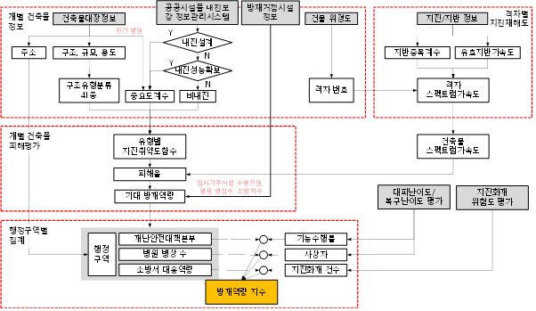
[그림 6.1-1] 개별 방재거점시설 지진후 보유역량 지수 평가절차
진후 방재역량 집계
지진 발생 후 방재거점시설의 가용 방재역량은 전체 방재역량에서 피해확률을 곱하여 산정한 피해 방재역량을 빼주어 산정한다.
응급의료
의료시설의 관할지역은 권역응급의료센터 기준으로 정의되며 관할 응급의료센터에 속한 응급실이 있는 종합병원과 권역응급의료센터의 평가결과를 해당 행정구역에 할당한다. 본 절차서에서 적용되는 응급의료권역 내 전체 병상 공급은 행정구역간 접근성을 고려하여 식 (6.2-1~2)와 같이 정의한다
(6.2-1)
(6.2-2)
여기서,
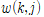 = 행정동 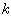와 의료시설 의 접근성을 고려한 가중치
= 행정동 와 의료시설 의 거리
= 가 0.99가 되는 행정동 와 의료시설 의 거리
이때, 본 절차서는 가 짧을수록 행정동간 평가결과의 차이가 명확하게 되는 점을 고려하여 기준 거리()를 5㎞로 결정하였다.
관할구역 내 재난안전대책본부 공급량은 다음과 같이 산정한다
(5.6-2)
소방
소방시설의 관할지역은 소방서별로 정의하며 관할 소방서의 속한 119 안전센터의 평가결과를 해당 행정구역에 할당한다. 본 절차서에서 적용되는 소방서 관할 구역 내 전체 소방차량 공급은 행정구역간 접근성을 고려하여 식 (6.2-3~4)와 같이 정의한다.
(6.2-3)
(6.2-4)
여기서,
= 행정동 와 소방시설 의 접근성을 고려한 가중치
= 행정동 와 소방시설 의 거리
= 가 0.99가 되는 행정동 와 소방시설 의 거리
이때, 본 절차서는 재난관리 위험도 평가시 안전측으로 평가하기 위해 기준 거리()를 5㎞로 결정하였다.
재난안전대책본부
재난안전대책본부의 관할 지역은 구단위로 정의하며 관할 구청의 평가결과를 행정구역에 할당한다. 관할구역 내 재난안전대책본부 공급량은 다음과 같이 산정한다.
(6.2-5)
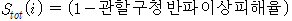
여기서,
= 관할구역 내 재난안전대책본부 공급
지진후 방재수요 집계
지진 발생 후 방재거점시설의 방재수요는 의료시설의 경우 예상 중상자수, 소방시설은 가용 소방차량 수를 적용한다.
응급의료
응급의료권역 내 병상 수요합계는 식 (6.3-1)로 정의할 수 있다.
(6.3-1)
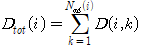
여기서,
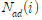 = 응급의료권역 내 관할 행정동 수
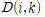 = 응급의료권역 관할 행정동 의 병상(=예상 중상자 수) 수요
예상 입원수요는 HAZUS에서 제시하는 구조유형별 수치 중 근사적 대푯값을 선정하여 산정하였으며 그 중 중상자 수로 한정하였다. 예상 중상자 수는 식 (6.3-2)에 따라 산정한다. HAZUS에서 제시하는 구조유형별 수치 중 근사적 대푯값은 [표 6.3-1]에 나타냈다. 붕괴 시 피해연면적은 HAZUS에서 제시하는 구조유형별 붕괴계수와 전파 시 피해연면적의 곱으로 산정하였다.
(6.3-2)
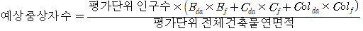
여기서,
= 반파 시 피해연면적
= 전파 시 피해연면적
= 붕괴 시 피해연면적
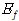 = 반파 시 HAZUS에서 제시하는 구조유형별 수치 중 근사적 대표값
= 전파 시 HAZUS에서 제시하는 구조유형별 수치 중 근사적 대표값
= 붕괴 시 HAZUS에서 제시하는 구조유형별 수치 중 근사적 대표값
[그림 6.3-1] HAZUS에서 제시하는 구조유형별 수치 중 근사적 대표값
피해등급
중상
반파(= )
0.001
전파(= )
0.01
붕괴(= )
5
소방
소방서 관할구역 내 소방차량 수요 합계는 식 (6.3-3)으로 정의할 수 있다.
(6.3-3)
여기서,
= 소방서 내 관할 행정동 수
: 소방서 관할 의 소방차량 수요
= 행정동 의 인구기준 소방차량 법정수량
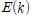 = 행정동 의 예상되는 지진화재 건수/dd>
소방차량 법정 수량은 「소방력 기준에 관한 규칙」 별표 1에 따라 산정할 수 있다. 예상되는 지진화재 건수는 건축물 지진화재위험도 평가기법 개발 및 포항시 시범 적용 보고서(경상대, 2023)에서 제시한 식 (6.3-4)를 적용하여 PGA에 따른 평가지역의 행정구역별 출화건수를 산정한다.
(6.3-4)
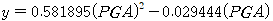
여기서,
= 1,000,000 당 평균출화건수
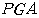 = 최대 지반 가속도 ()
재난관리 위험도 평가지수 산정
지역단위 재난관리 위험도 평가지수는 방재거점시설의 지진후 수요 대비 공급량을 지역단위로 비교하여 행정구역별 방재역량 확보율을 평가한다. 평가단위 내에서 지진 후 방재역량을 요구되는 방재역량으로 정규화한 백분율로 지역단위 재난관리 위험도 평가지수를 표시한다.
의료시설
응급의료권역 관할구역 내 위치하는 행정동 의 의료시설 재난관리 위험도 평가지수는 식 (6.4-1)과 같이 산정한다.
(6.4-1)
여기서,
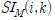 = 응급의료권역 관할구역 내 위치하는 행정동 의 의료시설 재난관리 위험도
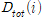 = 응급의료권역 내 병상 수요합계
= 응급의료권역 내 전체 병상공급
소방시설
소방서 관할구역 내 위치하는 행정동 의 소방시설 재난관리 위험도 평가지수는 식 (6.4-2)와 같이 산정한다.
(6.4-2)
여기서,
= 소방서 관할구역 내 위치하는 행정동 의 소방시설 재난관리 위험도
= 소방서 관할구역 내 소방차량 수요 합계
= 소방서 관할 구역 내 전체 소방차량 공급
재난안전대책본부
재난안전대책본부의 평가지수는 식 (6.4-3)과 같다.
(6.4-3)
여기서,
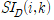 = 관할구역 에 위치한 행정동 의 재난안전대책본부 재난관리 위험도
= 관할구역 내 재난안전대책본부 수요로서 1을 적용
= 관할구역 내 재난안전대책본부 공급
행정동 상대평가
행정구역간의 지진피해를 비교하여 상대적으로 위험한 지역을 선정하기 위해 최종 평가결과는 재난관리 위험도 평가지수를 토대로 대상 행정구역들을 5단계 위험도 등급으로 분류하여 나타낸다. 지진후 방재역량대비 방재수요가 작을 경우 평가지수 100을 상한값으로 조정하였다. 각 방재거점시설별 재난관리 위험도 환산점수 기준은 동일하게 적용하였으며, 이를 [표 6.5-1]에 나타냈다.

 <2㎞ 격자망>
<2㎞ 격자망>
 <1㎞ 격자망>
<1㎞ 격자망>
 <0.5㎞ 격자망>
<0.5㎞ 격자망>
![[그림 2-18] 동남권 검증 영역의 공간그리드 DB 시트 예시](../images/intro/geotechnical/img_fic_2-18.gif)
![[그림 2-19] 동남권 검증 영역의 공간그리드 DB기반 VS30 분포도](../images/intro/geotechnical/img_fic_2-19.gif)
 <2㎞ 격자망>
<2㎞ 격자망>
 <1㎞ 격자망>
<1㎞ 격자망>
 <0.5㎞ 격자망>
<0.5㎞ 격자망>
 <2㎞ 격자망>
<2㎞ 격자망>
 <1㎞ 격자망>
<1㎞ 격자망>
 <0.5㎞ 격자망>
<0.5㎞ 격자망>
 <2㎞ 격자망>
<2㎞ 격자망>
 <1㎞ 격자망>
<1㎞ 격자망>
 <0.5㎞ 격자망>
<0.5㎞ 격자망>
 <2㎞ 격자망>
<2㎞ 격자망>
 <1㎞ 격자망>
<1㎞ 격자망>
 <0.5㎞ 격자망>
<0.5㎞ 격자망>
![[그림 2-24] 지진지반응답 매개변수 산정 방법(Sun et al., 2014)](../images/intro/geotechnical/img_fic_2-24.gif)
![[그림 2-25] 지진지반응답 매개변수 산정 방법](../images/intro/geotechnical/img_fic_2-25.gif)
 (㎧)
(㎧) 내 전체 병상 공급은 행정구역간 접근성을 고려하여 식 (6.2-1~2)와 같이 정의한다
내 전체 병상 공급은 행정구역간 접근성을 고려하여 식 (6.2-1~2)와 같이 정의한다

 의 접근성을 고려한 가중치
의 접근성을 고려한 가중치 = 행정동 와 의료시설
= 행정동 와 의료시설  = 가 0.99가 되는 행정동 와 의료시설
= 가 0.99가 되는 행정동 와 의료시설 
 관할 구역 내 전체 소방차량 공급은 행정구역간 접근성을 고려하여 식 (6.2-3~4)와 같이 정의한다.
관할 구역 내 전체 소방차량 공급은 행정구역간 접근성을 고려하여 식 (6.2-3~4)와 같이 정의한다.

 = 관할구역 내 재난안전대책본부 공급
= 관할구역 내 재난안전대책본부 공급 = 반파 시 피해연면적
= 반파 시 피해연면적 = 전파 시 피해연면적
= 전파 시 피해연면적 = 붕괴 시 피해연면적
= 붕괴 시 피해연면적 = 붕괴 시 HAZUS에서 제시하는 구조유형별 수치 중 근사적 대표값
= 붕괴 시 HAZUS에서 제시하는 구조유형별 수치 중 근사적 대표값 )
)
 : 소방서
: 소방서  = 행정동 의 인구기준 소방차량 법정수량
= 행정동 의 인구기준 소방차량 법정수량 = 1,000,000
= 1,000,000  당 평균출화건수
당 평균출화건수 의 의료시설 재난관리 위험도 평가지수는 식 (6.4-1)과 같이 산정한다.
의 의료시설 재난관리 위험도 평가지수는 식 (6.4-1)과 같이 산정한다.

 = 소방서
= 소방서